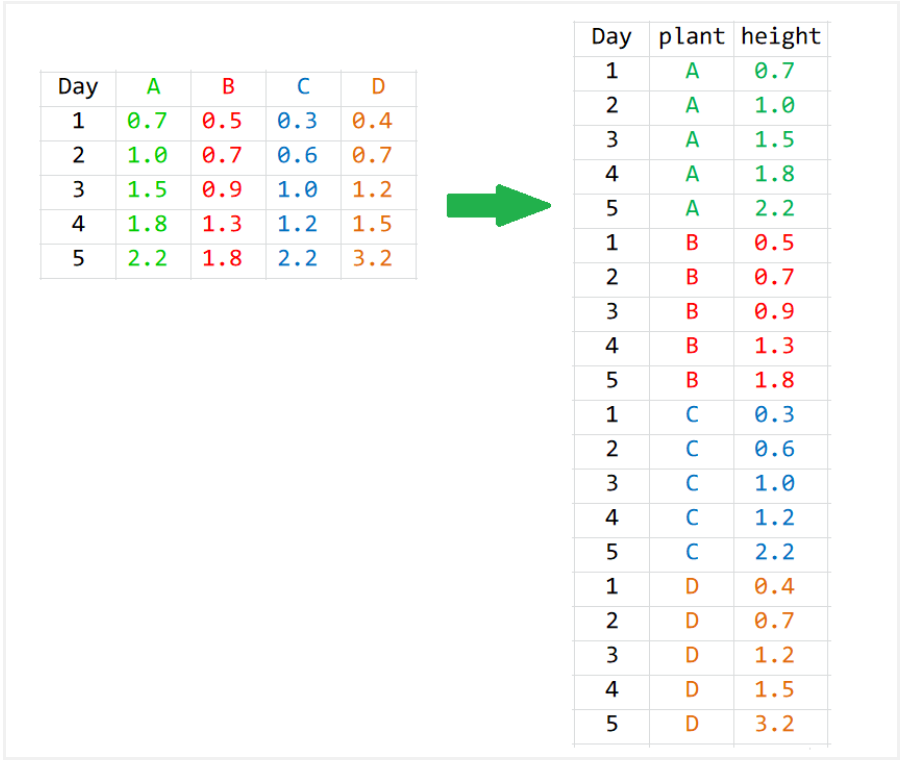
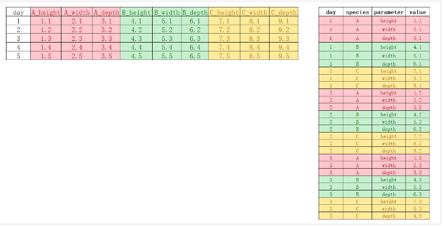
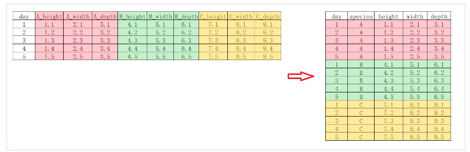
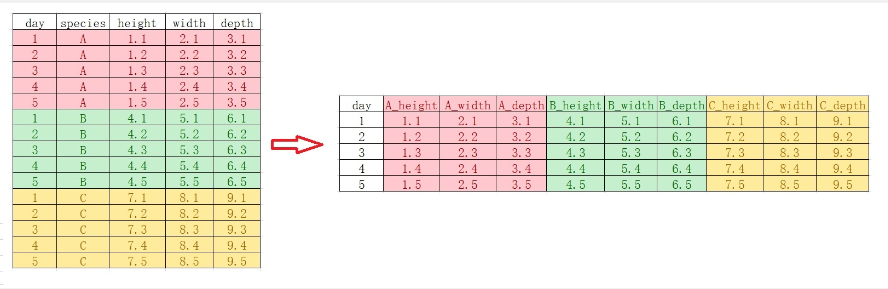
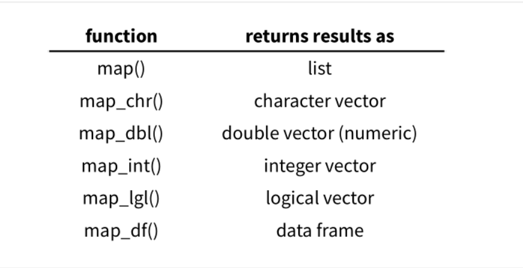
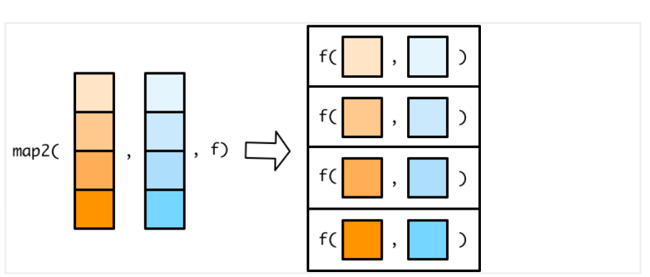

<!DOCTYPE html>


<html lang="zh-CN">


<head>
  <meta name="baidu-site-verification" content="codeva-NSg7ynviLa" />
  <meta charset="utf-8" />
    
  <meta name="viewport" content="width=device-width, initial-scale=1, maximum-scale=1" />
  <title>
    R包-tidyverse |  
  </title>
  <meta name="generator" content="hexo-theme-ayer">
  
  <link rel="shortcut icon" href="/images/mojie.jpg" />
  
  
<link rel="stylesheet" href="/dist/main.css">

  <link rel="stylesheet" href="https://cdn.jsdelivr.net/gh/Shen-Yu/cdn/css/remixicon.min.css">
  
<link rel="stylesheet" href="/css/custom.css">

  
  <script src="https://cdn.jsdelivr.net/npm/pace-js@1.0.2/pace.min.js"></script>
  
  

  

<link rel="alternate" href="/atom.xml" title="null" type="application/atom+xml">
</head>

</html>

<body>
  <div id="app">
    
      
    <main class="content on">
      <section class="outer">
  <article
  id="post-R包-tidyverse"
  class="article article-type-post"
  itemscope
  itemprop="blogPost"
  data-scroll-reveal
>
  <div class="article-inner">
    
    <header class="article-header">
       
<h1 class="article-title sea-center" style="border-left:0" itemprop="name">
  R包-tidyverse
</h1>
 

    </header>
     
    <div class="article-meta">
      <a href="/posts/585a0545/" class="article-date">
  <time datetime="2025-12-29T03:27:45.000Z" itemprop="datePublished">2025-12-29</time>
</a> 
  <div class="article-category">
    <a class="article-category-link" href="/categories/%E6%95%B0%E6%8D%AE%E5%88%86%E6%9E%90/">数据分析</a> / <a class="article-category-link" href="/categories/%E6%95%B0%E6%8D%AE%E5%88%86%E6%9E%90/R/">R</a>
  </div>
  
<div class="word_count">
    <span class="post-time">
        <span class="post-meta-item-icon">
            <i class="ri-quill-pen-line"></i>
            <span class="post-meta-item-text"> 字数统计:</span>
            <span class="post-count">8k</span>
        </span>
    </span>

    <span class="post-time">
        &nbsp; | &nbsp;
        <span class="post-meta-item-icon">
            <i class="ri-book-open-line"></i>
            <span class="post-meta-item-text"> 阅读时长≈</span>
            <span class="post-count">36 分钟</span>
        </span>
    </span>
</div>
 
    </div>
      
    <div class="tocbot"></div>


  
    <div class="article-entry" itemprop="articleBody">
       
  <link rel="stylesheet" type="text/css" href="https://cdn.jsdelivr.net/hint.css/2.4.1/hint.min.css"><p>主要基于《数据科学中的R语言》的学习笔记。</p>
<span id="more"></span>
<h1>dplyr</h1>
<p>dplyr 定义了数据处理的规范语法，其中主要包含以下10个主要的函数。</p>
<ul>
<li><code>mutate()</code>, <code>select()</code>, <code>rename()</code> , <code>filter()</code></li>
<li><code>summarise()</code>, <code>group_by()</code>, <code>arrange()</code></li>
<li><code>left_join()</code>, <code>right_join()</code>， <code>full_join()</code></li>
</ul>
<p>这里我们使用的数据如下，这是一个学生成绩表。</p>
<figure class="highlight r"><table><tr><td class="gutter"><pre><span class="line">1</span><br><span class="line">2</span><br><span class="line">3</span><br><span class="line">4</span><br><span class="line">5</span><br><span class="line">6</span><br><span class="line">7</span><br><span class="line">8</span><br></pre></td><td class="code"><pre><span class="line"><span class="operator">&gt;</span> df</span><br><span class="line">   name    type score</span><br><span class="line"><span class="number">1</span> Alice english    <span class="number">80</span></span><br><span class="line"><span class="number">2</span> Alice    math    <span class="number">60</span></span><br><span class="line"><span class="number">3</span>   Bob english    <span class="number">70</span></span><br><span class="line"><span class="number">4</span>   Bob    math    <span class="number">69</span></span><br><span class="line"><span class="number">5</span> Carol english    <span class="number">80</span></span><br><span class="line"><span class="number">6</span> Carol    math    <span class="number">90</span></span><br></pre></td></tr></table></figure>
<h2 id="管道">管道 <code>%&gt;%</code></h2>
<p>实际运用中，我们经常要使用函数，比如计算向量<code>c(1:10)</code>所有元素值的和</p>
<figure class="highlight r"><table><tr><td class="gutter"><pre><span class="line">1</span><br></pre></td><td class="code"><pre><span class="line"><span class="built_in">sum</span><span class="punctuation">(</span><span class="built_in">c</span><span class="punctuation">(</span><span class="number">1</span><span class="operator">:</span><span class="number">10</span><span class="punctuation">)</span><span class="punctuation">)</span></span><br></pre></td></tr></table></figure>
<figure class="highlight r"><table><tr><td class="gutter"><pre><span class="line">1</span><br></pre></td><td class="code"><pre><span class="line"><span class="comment">## [1] 55</span></span><br></pre></td></tr></table></figure>
<p>现在有个与上面的等价的写法，就是使用管道操作符<a target="_blank" rel="noopener" href="https://magrittr.tidyverse.org/"><code>%&gt;%</code></a>。</p>
<figure class="highlight r"><table><tr><td class="gutter"><pre><span class="line">1</span><br></pre></td><td class="code"><pre><span class="line"><span class="built_in">c</span><span class="punctuation">(</span><span class="number">1</span><span class="operator">:</span><span class="number">10</span><span class="punctuation">)</span> <span class="operator">%&gt;%</span> <span class="built_in">sum</span><span class="punctuation">(</span><span class="punctuation">)</span></span><br></pre></td></tr></table></figure>
<figure class="highlight r"><table><tr><td class="gutter"><pre><span class="line">1</span><br></pre></td><td class="code"><pre><span class="line"><span class="comment">## [1] 55</span></span><br></pre></td></tr></table></figure>
<p>这条语句的意思是<code>f(x)</code> 写成 <code>x %&gt;% f()</code>，这里向量 <code>c(1:10)</code> 通过管道操作符 <code>%&gt;%</code> ，传递到函数<code>sum()</code>的第一个参数位置，即<code>sum(c(1:10))</code>， 这个 <code>%&gt;%</code> 管道操作符还是很形象的。在Windows系统中可以通过<code>Ctrl + Shift + M</code> 快捷键产生 <code>%&gt;%</code>，苹果系统对应的快捷键是<code>Cmd + Shift + M</code>。</p>
<h2 id="新增一列-mutate">新增一列 <code>mutate()</code></h2>
<p>假设我们要新增一列奖励分 reward ，那么我们运行以下代码：</p>
<figure class="highlight r"><table><tr><td class="gutter"><pre><span class="line">1</span><br><span class="line">2</span><br></pre></td><td class="code"><pre><span class="line">reward <span class="operator">&lt;-</span> <span class="built_in">c</span><span class="punctuation">(</span><span class="number">2</span><span class="punctuation">,</span> <span class="number">5</span><span class="punctuation">,</span> <span class="number">9</span><span class="punctuation">,</span> <span class="number">8</span><span class="punctuation">,</span> <span class="number">5</span><span class="punctuation">,</span> <span class="number">6</span><span class="punctuation">)</span></span><br><span class="line">mutate<span class="punctuation">(</span>.data <span class="operator">=</span> df<span class="punctuation">,</span> extra <span class="operator">=</span> reward<span class="punctuation">)</span> </span><br></pre></td></tr></table></figure>
<p><code>mutate()</code> 不会修改原数据框 <code>df</code>，而是会直接打印出来。</p>
<p>其第一个参数是 <code>.data</code>，接受要处理的数据框，比如这里的<code>df</code>（由于几乎所有 dplyr 的函数第一个参数都是 这个，因此  <code>.data</code> 可以省略不写 ）。</p>
<p>第二个参数是<code>Name-value</code>对, 比如<code>extra = reward</code>。</p>
<figure class="highlight r"><table><tr><td class="gutter"><pre><span class="line">1</span><br><span class="line">2</span><br><span class="line">3</span><br><span class="line">4</span><br><span class="line">5</span><br><span class="line">6</span><br><span class="line">7</span><br><span class="line">8</span><br></pre></td><td class="code"><pre><span class="line"><span class="operator">&gt;</span> mutate<span class="punctuation">(</span>.data <span class="operator">=</span> df<span class="punctuation">,</span> extra <span class="operator">=</span> reward<span class="punctuation">)</span> </span><br><span class="line">   name    type score extra</span><br><span class="line"><span class="number">1</span> Alice english    <span class="number">80</span>     <span class="number">2</span></span><br><span class="line"><span class="number">2</span> Alice    math    <span class="number">60</span>     <span class="number">5</span></span><br><span class="line"><span class="number">3</span>   Bob english    <span class="number">70</span>     <span class="number">9</span></span><br><span class="line"><span class="number">4</span>   Bob    math    <span class="number">69</span>     <span class="number">8</span></span><br><span class="line"><span class="number">5</span> Carol english    <span class="number">80</span>     <span class="number">5</span></span><br><span class="line"><span class="number">6</span> Carol    math    <span class="number">90</span>     <span class="number">6</span></span><br></pre></td></tr></table></figure>
<p>使用管道的方式如下，这是更加通用的写法。</p>
<figure class="highlight r"><table><tr><td class="gutter"><pre><span class="line">1</span><br></pre></td><td class="code"><pre><span class="line">df <span class="operator">%&gt;%</span> mutate<span class="punctuation">(</span>extra <span class="operator">=</span> reward<span class="punctuation">)</span> </span><br></pre></td></tr></table></figure>
<p><code>mutate()</code> 函数中可以通过使用别的函数对指定列进行处理，再赋值给新列。</p>
<p>比如，我们想计算每位同学分数的平方，然后构建数据框新的一列，则可以计算如下</p>
<figure class="highlight r"><table><tr><td class="gutter"><pre><span class="line">1</span><br><span class="line">2</span><br><span class="line">3</span><br><span class="line">4</span><br><span class="line">5</span><br><span class="line">6</span><br></pre></td><td class="code"><pre><span class="line">calc_square <span class="operator">&lt;-</span> <span class="keyword">function</span><span class="punctuation">(</span>x<span class="punctuation">)</span> <span class="punctuation">&#123;</span></span><br><span class="line">  x<span class="operator">^</span><span class="number">2</span></span><br><span class="line"><span class="punctuation">&#125;</span></span><br><span class="line"></span><br><span class="line">df <span class="operator">%&gt;%</span> </span><br><span class="line">  mutate<span class="punctuation">(</span>new_col <span class="operator">=</span> calc_square<span class="punctuation">(</span>score<span class="punctuation">)</span><span class="punctuation">)</span></span><br></pre></td></tr></table></figure>
<p>更直接的写法如下：</p>
<figure class="highlight r"><table><tr><td class="gutter"><pre><span class="line">1</span><br></pre></td><td class="code"><pre><span class="line">df <span class="operator">%&gt;%</span> mutate<span class="punctuation">(</span>new_col <span class="operator">=</span> score<span class="operator">^</span><span class="number">2</span><span class="punctuation">)</span></span><br></pre></td></tr></table></figure>
<p>之前的操作并没有保存，只是打印出来了，我们可以通过赋值保存为一个新的数据框。</p>
<figure class="highlight plaintext"><table><tr><td class="gutter"><pre><span class="line">1</span><br></pre></td><td class="code"><pre><span class="line">df_new &lt;- df %&gt;% mutate(new_col = score^2)</span><br></pre></td></tr></table></figure>
<h2 id="选取列-select">选取列 <code>select()</code></h2>
<p>选取一列</p>
<figure class="highlight plaintext"><table><tr><td class="gutter"><pre><span class="line">1</span><br></pre></td><td class="code"><pre><span class="line">df_new %&gt;% select(name)</span><br></pre></td></tr></table></figure>
<p>选取多列，则直接输入多个列名</p>
<figure class="highlight plaintext"><table><tr><td class="gutter"><pre><span class="line">1</span><br></pre></td><td class="code"><pre><span class="line">df_new %&gt;% select(name, extra)</span><br></pre></td></tr></table></figure>
<p>如果只是想要剔除某列，则用 <code>-</code> 或 <code>!</code> 号</p>
<figure class="highlight plaintext"><table><tr><td class="gutter"><pre><span class="line">1</span><br><span class="line">2</span><br></pre></td><td class="code"><pre><span class="line">df_new %&gt;% select(-type)</span><br><span class="line">df_new %&gt;% select(!type)</span><br></pre></td></tr></table></figure>
<p>也可以通过位置索引来进行选取</p>
<figure class="highlight plaintext"><table><tr><td class="gutter"><pre><span class="line">1</span><br><span class="line">2</span><br><span class="line">3</span><br></pre></td><td class="code"><pre><span class="line">df_new %&gt;% select(1, 2, 3)</span><br><span class="line">df_new %&gt;% select(2:3)</span><br><span class="line">df_new %&gt;% select(-1)</span><br></pre></td></tr></table></figure>
<p>基于列名的首字母、尾字母、是否包含某字母来进行选取</p>
<figure class="highlight plaintext"><table><tr><td class="gutter"><pre><span class="line">1</span><br><span class="line">2</span><br><span class="line">3</span><br></pre></td><td class="code"><pre><span class="line">df_new %&gt;% select(starts_with(&quot;s&quot;))</span><br><span class="line">df_new %&gt;% select(ends_with(&quot;e&quot;))</span><br><span class="line">df_new %&gt;% select(contains(&quot;score&quot;))</span><br></pre></td></tr></table></figure>
<p>基于每一列的类型来选取</p>
<figure class="highlight plaintext"><table><tr><td class="gutter"><pre><span class="line">1</span><br><span class="line">2</span><br></pre></td><td class="code"><pre><span class="line">df_new %&gt;% select(where(is.character))</span><br><span class="line">df_new %&gt;% select(where(is.numeric))</span><br></pre></td></tr></table></figure>
<p>同时使用多个条件，<code>&amp;</code> 表示和条件，<code>|</code> 表示或条件，<code>!</code> 表示取否。</p>
<figure class="highlight r"><table><tr><td class="gutter"><pre><span class="line">1</span><br><span class="line">2</span><br><span class="line">3</span><br></pre></td><td class="code"><pre><span class="line">df_new <span class="operator">%&gt;%</span> select<span class="punctuation">(</span>where<span class="punctuation">(</span><span class="built_in">is.numeric</span><span class="punctuation">)</span> <span class="operator">&amp;</span> starts_with<span class="punctuation">(</span><span class="string">&quot;t&quot;</span><span class="punctuation">)</span><span class="punctuation">)</span></span><br><span class="line">df_new <span class="operator">%&gt;%</span> select<span class="punctuation">(</span>starts_with<span class="punctuation">(</span><span class="string">&quot;s&quot;</span><span class="punctuation">)</span> <span class="operator">|</span> ends_with<span class="punctuation">(</span><span class="string">&quot;e&quot;</span><span class="punctuation">)</span><span class="punctuation">)</span></span><br><span class="line">df_new <span class="operator">%&gt;%</span> select<span class="punctuation">(</span><span class="operator">!</span>starts_with<span class="punctuation">(</span><span class="string">&quot;s&quot;</span><span class="punctuation">)</span><span class="punctuation">)</span></span><br></pre></td></tr></table></figure>
<h2 id="修改列名-rename">修改列名 <code>rename()</code></h2>
<p>例如将 <code>total</code> 修改为 <code>total_score</code> 。</p>
<figure class="highlight plaintext"><table><tr><td class="gutter"><pre><span class="line">1</span><br><span class="line">2</span><br><span class="line">3</span><br></pre></td><td class="code"><pre><span class="line">df_new %&gt;% </span><br><span class="line">  select(name, type, total) %&gt;% </span><br><span class="line">  rename(total_score = total)</span><br></pre></td></tr></table></figure>
<h2 id="选取行-filter">选取行 filter()</h2>
<p>前面<code>select()</code>是列方向的选择，而用<code>filter()</code>函数，我们可以对数据框<strong>行方向</strong>进行筛选，选出符合特定条件的某些行。</p>
<p>比如这里把<strong>成绩等于90分的</strong>同学筛选出来 。</p>
<figure class="highlight plaintext"><table><tr><td class="gutter"><pre><span class="line">1</span><br></pre></td><td class="code"><pre><span class="line">df_new %&gt;% filter(score == 90)</span><br></pre></td></tr></table></figure>
<p>R提供了其他比较关系的算符: <code>&lt;</code>, <code>&gt;</code>, <code>&lt;=</code>, <code>&gt;=</code>, <code>==</code> (equal), <code>!=</code> (not equal), <code>%in%</code>, <code>is.na()</code> 和 <code>!is.na()</code> .</p>
<p>也可以限定多个条件进行筛选, 比如，限定英语学科，<strong>同时</strong>要求成绩高于75分的所有条目筛选出来</p>
<figure class="highlight plaintext"><table><tr><td class="gutter"><pre><span class="line">1</span><br></pre></td><td class="code"><pre><span class="line">df_new %&gt;% filter(type == &quot;english&quot;, score &gt;= 75)</span><br></pre></td></tr></table></figure>
<p>也就说，<strong>逗号分隔的两个条件都要满足</strong>。</p>
<p>当然，我们也可以使用逻辑运算符号，举例如下</p>
<figure class="highlight plaintext"><table><tr><td class="gutter"><pre><span class="line">1</span><br><span class="line">2</span><br></pre></td><td class="code"><pre><span class="line">df_new %&gt;% filter(type == &quot;english&quot; &amp; score &gt;= 75)</span><br><span class="line">df_new %&gt;% filter(score == 70 | score == 90)</span><br></pre></td></tr></table></figure>
<p>这里的第二条语句也可以改写为</p>
<figure class="highlight r"><table><tr><td class="gutter"><pre><span class="line">1</span><br></pre></td><td class="code"><pre><span class="line">df_new <span class="operator">%&gt;%</span> filter<span class="punctuation">(</span>score <span class="operator">%in%</span> <span class="built_in">c</span><span class="punctuation">(</span><span class="number">70</span><span class="punctuation">,</span> <span class="number">90</span><span class="punctuation">)</span><span class="punctuation">)</span></span><br></pre></td></tr></table></figure>
<p>当然还可以配合一些函数使用，比如把最高分的同学找出来</p>
<figure class="highlight plaintext"><table><tr><td class="gutter"><pre><span class="line">1</span><br></pre></td><td class="code"><pre><span class="line">df_new %&gt;% filter(score == max(score))</span><br></pre></td></tr></table></figure>
<p>把成绩高于均值的找出来</p>
<figure class="highlight plaintext"><table><tr><td class="gutter"><pre><span class="line">1</span><br></pre></td><td class="code"><pre><span class="line">df_new %&gt;% filter(score &gt; mean(score))</span><br></pre></td></tr></table></figure>
<h2 id="统计汇总-summarise">统计汇总 <code>summarise()</code></h2>
<p><code>summarise()</code>函数非常强大，主要用于统计汇总，往往与其他函数配合使用，比如计算所有同学考试成绩的均值</p>
<figure class="highlight plaintext"><table><tr><td class="gutter"><pre><span class="line">1</span><br></pre></td><td class="code"><pre><span class="line">df_new %&gt;% summarise(mean_score = mean(score))</span><br></pre></td></tr></table></figure>
<p>也可以同时完成多个统计。其中 <code>n()</code>函数统计行数。</p>
<figure class="highlight plaintext"><table><tr><td class="gutter"><pre><span class="line">1</span><br><span class="line">2</span><br><span class="line">3</span><br><span class="line">4</span><br><span class="line">5</span><br><span class="line">6</span><br></pre></td><td class="code"><pre><span class="line">df_new %&gt;% summarise(</span><br><span class="line">  mean_score   = mean(score),</span><br><span class="line">  median_score = median(score),</span><br><span class="line">  n            = n(),</span><br><span class="line">  sum          = sum(score)</span><br><span class="line">)</span><br></pre></td></tr></table></figure>
<p>不过其实直接用 R 自带的 <code>summary()</code> 也差不多。</p>
<figure class="highlight r"><table><tr><td class="gutter"><pre><span class="line">1</span><br><span class="line">2</span><br><span class="line">3</span><br></pre></td><td class="code"><pre><span class="line"><span class="operator">&gt;</span> summary<span class="punctuation">(</span>df_new<span class="operator">$</span>score<span class="punctuation">)</span></span><br><span class="line">   Min. <span class="number">1</span>st Qu.  Median    Mean <span class="number">3</span>rd Qu.    Max. </span><br><span class="line">  <span class="number">60.00</span>   <span class="number">69.25</span>   <span class="number">75.00</span>   <span class="number">74.83</span>   <span class="number">80.00</span>   <span class="number">90.00</span> </span><br></pre></td></tr></table></figure>
<h2 id="排序-arrange">排序 <code>arrange()</code></h2>
<p>比如我们按照考试总成绩从低到高排序，然后输出</p>
<figure class="highlight plaintext"><table><tr><td class="gutter"><pre><span class="line">1</span><br></pre></td><td class="code"><pre><span class="line">df_new %&gt;% arrange(total)</span><br></pre></td></tr></table></figure>
<p>默认是从低到高，如果需要采用从高到低排序，有两种方法，第一种方法是在用于排序的变量前面加 <code>-</code> 号；第二种方法可读性更强些，需要使用<code>desc()</code>函数</p>
<figure class="highlight plaintext"><table><tr><td class="gutter"><pre><span class="line">1</span><br><span class="line">2</span><br></pre></td><td class="code"><pre><span class="line">df_new %&gt;% arrange(-total)</span><br><span class="line">df_new %&gt;% arrange(desc(total))</span><br></pre></td></tr></table></figure>
<p>也可对多个变量依次排序。比如，我们先按学科类型排序，然后按照成绩从高到底降序排列</p>
<figure class="highlight r"><table><tr><td class="gutter"><pre><span class="line">1</span><br><span class="line">2</span><br></pre></td><td class="code"><pre><span class="line">df_new <span class="operator">%&gt;%</span> </span><br><span class="line">  arrange<span class="punctuation">(</span>type<span class="punctuation">,</span> desc<span class="punctuation">(</span>total<span class="punctuation">)</span><span class="punctuation">)</span></span><br></pre></td></tr></table></figure>
<h2 id="左联结-left-join">左联结 <code>left_join()</code></h2>
<p>左联结是保存第一个表的所有内容，第二个表的内容允许缺失（NA）。</p>
<p>正常写法如下</p>
<figure class="highlight plaintext"><table><tr><td class="gutter"><pre><span class="line">1</span><br></pre></td><td class="code"><pre><span class="line">left_join(df1, df2, by = &quot;name&quot;)</span><br></pre></td></tr></table></figure>
<p>管道写法如下</p>
<figure class="highlight plaintext"><table><tr><td class="gutter"><pre><span class="line">1</span><br></pre></td><td class="code"><pre><span class="line">df1 %&gt;% left_join(df2, by = &quot;name&quot;)</span><br></pre></td></tr></table></figure>
<h2 id="右联结-right-join">右联结 <code>right_join()</code></h2>
<p>右联结同理</p>
<figure class="highlight plaintext"><table><tr><td class="gutter"><pre><span class="line">1</span><br></pre></td><td class="code"><pre><span class="line">df1 %&gt;% right_join(df2, by = &quot;name&quot;)</span><br></pre></td></tr></table></figure>
<h2 id="满联结-full-join">满联结 <code>full_join()</code></h2>
<p>有时候，我们不想丢失项，可以使用<code>full_join()</code>，该函数确保条目是完整的，信息缺失的地方为<code>NA</code>。</p>
<p>也就是两个表的键的<strong>并集</strong>。</p>
<figure class="highlight plaintext"><table><tr><td class="gutter"><pre><span class="line">1</span><br></pre></td><td class="code"><pre><span class="line">df1 %&gt;% full_join(df2, by = &quot;name&quot;)</span><br></pre></td></tr></table></figure>
<h2 id="内联结inner-join">内联结<code>inner_join()</code></h2>
<p>两个表的键的<strong>交集</strong>（两个表的共同的键）。</p>
<figure class="highlight plaintext"><table><tr><td class="gutter"><pre><span class="line">1</span><br></pre></td><td class="code"><pre><span class="line">df1 %&gt;% inner_join(df2, by = &quot;name&quot;)</span><br></pre></td></tr></table></figure>
<h2 id="去重-distinct">去重 <code>distinct()</code></h2>
<p><code>distinct()</code>函数是去除重复的行（保留第一次出现的行）</p>
<figure class="highlight plaintext"><table><tr><td class="gutter"><pre><span class="line">1</span><br><span class="line">2</span><br></pre></td><td class="code"><pre><span class="line">df %&gt;%</span><br><span class="line">  distinct()</span><br></pre></td></tr></table></figure>
<p>如果需要查看某一列去重后的结果；多列则输入多列名称</p>
<figure class="highlight r"><table><tr><td class="gutter"><pre><span class="line">1</span><br><span class="line">2</span><br></pre></td><td class="code"><pre><span class="line">df <span class="operator">%&gt;%</span> distinct<span class="punctuation">(</span>name<span class="punctuation">)</span></span><br><span class="line">df <span class="operator">%&gt;%</span> distinct<span class="punctuation">(</span>name<span class="punctuation">,</span> type<span class="punctuation">)</span></span><br></pre></td></tr></table></figure>
<figure class="highlight plaintext"><table><tr><td class="gutter"><pre><span class="line">1</span><br><span class="line">2</span><br><span class="line">3</span><br><span class="line">4</span><br></pre></td><td class="code"><pre><span class="line">   name</span><br><span class="line">1 Alice</span><br><span class="line">2   Bob</span><br><span class="line">3 Carol</span><br></pre></td></tr></table></figure>
<figure class="highlight plaintext"><table><tr><td class="gutter"><pre><span class="line">1</span><br><span class="line">2</span><br><span class="line">3</span><br><span class="line">4</span><br><span class="line">5</span><br><span class="line">6</span><br><span class="line">7</span><br></pre></td><td class="code"><pre><span class="line">   name    type</span><br><span class="line">1 Alice english</span><br><span class="line">2 Alice    math</span><br><span class="line">3   Bob english</span><br><span class="line">4   Bob    math</span><br><span class="line">5 Carol english</span><br><span class="line">6 Carol    math</span><br></pre></td></tr></table></figure>
<p>如果是数据框基于某一列或某几列去重后的结果，即保留全部列，则设置 <code>.keep_all=TRUE</code></p>
<figure class="highlight plaintext"><table><tr><td class="gutter"><pre><span class="line">1</span><br></pre></td><td class="code"><pre><span class="line">df %&gt;% distinct(name, .keep_all=TRUE)</span><br></pre></td></tr></table></figure>
<figure class="highlight r"><table><tr><td class="gutter"><pre><span class="line">1</span><br><span class="line">2</span><br><span class="line">3</span><br><span class="line">4</span><br></pre></td><td class="code"><pre><span class="line">   name    type score</span><br><span class="line"><span class="number">1</span> Alice english    <span class="number">80</span></span><br><span class="line"><span class="number">2</span>   Bob english    <span class="number">70</span></span><br><span class="line"><span class="number">3</span> Carol english    <span class="number">80</span></span><br></pre></td></tr></table></figure>
<h2 id="统计唯一值出现此时-count">统计唯一值出现此时 <code>count()</code></h2>
<p><code>count()</code> 是统计某一列各组（即唯一值）出现的次数，如果设置<code>sort=TRUE</code> 参数则进行排序。</p>
<figure class="highlight r"><table><tr><td class="gutter"><pre><span class="line">1</span><br><span class="line">2</span><br></pre></td><td class="code"><pre><span class="line">df <span class="operator">%&gt;%</span>  count<span class="punctuation">(</span>name<span class="punctuation">)</span></span><br><span class="line">df <span class="operator">%&gt;%</span>  count<span class="punctuation">(</span>name<span class="punctuation">,</span>sort<span class="operator">=</span><span class="literal">TRUE</span><span class="punctuation">)</span></span><br></pre></td></tr></table></figure>
<figure class="highlight plaintext"><table><tr><td class="gutter"><pre><span class="line">1</span><br><span class="line">2</span><br><span class="line">3</span><br><span class="line">4</span><br></pre></td><td class="code"><pre><span class="line">   name n</span><br><span class="line">1 Alice 2</span><br><span class="line">2   Bob 2</span><br><span class="line">3 Carol 2</span><br></pre></td></tr></table></figure>
<p>也可以统计多列的结果，即统计多列不同组合出现的次数</p>
<figure class="highlight plaintext"><table><tr><td class="gutter"><pre><span class="line">1</span><br></pre></td><td class="code"><pre><span class="line">df %&gt;%  count(name,type, sort=TRUE)</span><br></pre></td></tr></table></figure>
<figure class="highlight plaintext"><table><tr><td class="gutter"><pre><span class="line">1</span><br><span class="line">2</span><br><span class="line">3</span><br><span class="line">4</span><br><span class="line">5</span><br><span class="line">6</span><br><span class="line">7</span><br></pre></td><td class="code"><pre><span class="line">   name    type n</span><br><span class="line">1 Alice english 1</span><br><span class="line">2 Alice    math 1</span><br><span class="line">3   Bob english 1</span><br><span class="line">4   Bob    math 1</span><br><span class="line">5 Carol english 1</span><br><span class="line">6 Carol    math 1</span><br></pre></td></tr></table></figure>
<p>除了统计分类变量，<code>count()</code> 也可以统计连续变量基于某个条件的分组数目。</p>
<p>例如，假如我们要统计分数大于70和小于等于70的数目，另外也可以按照学科进行分类统计</p>
<figure class="highlight r"><table><tr><td class="gutter"><pre><span class="line">1</span><br><span class="line">2</span><br></pre></td><td class="code"><pre><span class="line">df <span class="operator">%&gt;%</span>  count<span class="punctuation">(</span>score <span class="operator">&gt;</span> <span class="number">70</span><span class="punctuation">)</span></span><br><span class="line">df <span class="operator">%&gt;%</span>  count<span class="punctuation">(</span>type<span class="punctuation">,</span> score <span class="operator">&gt;</span> <span class="number">70</span><span class="punctuation">)</span></span><br></pre></td></tr></table></figure>
<figure class="highlight plaintext"><table><tr><td class="gutter"><pre><span class="line">1</span><br><span class="line">2</span><br><span class="line">3</span><br></pre></td><td class="code"><pre><span class="line">  score &gt; 70 n</span><br><span class="line">1      FALSE 3</span><br><span class="line">2       TRUE 3</span><br></pre></td></tr></table></figure>
<figure class="highlight plaintext"><table><tr><td class="gutter"><pre><span class="line">1</span><br><span class="line">2</span><br><span class="line">3</span><br><span class="line">4</span><br><span class="line">5</span><br></pre></td><td class="code"><pre><span class="line">     type score &gt; 70 n</span><br><span class="line">1 english      FALSE 1</span><br><span class="line">2 english       TRUE 2</span><br><span class="line">3    math      FALSE 2</span><br><span class="line">4    math       TRUE 1</span><br></pre></td></tr></table></figure>
<h1>数据规整</h1>
<h2 id="宽表格变成长表格">宽表格变成长表格</h2>
<p>假定这里有 <code>A</code>, <code>B</code>, <code>C</code> 和 <code>D</code> 四种植物每天生长的记录，</p>
<figure class="highlight r"><table><tr><td class="gutter"><pre><span class="line">1</span><br><span class="line">2</span><br><span class="line">3</span><br><span class="line">4</span><br><span class="line">5</span><br><span class="line">6</span><br><span class="line">7</span><br><span class="line">8</span><br><span class="line">9</span><br><span class="line">10</span><br></pre></td><td class="code"><pre><span class="line">plant_height <span class="operator">&lt;-</span> data.frame<span class="punctuation">(</span></span><br><span class="line">  Day <span class="operator">=</span> <span class="number">1</span><span class="operator">:</span><span class="number">5</span><span class="punctuation">,</span></span><br><span class="line">  A <span class="operator">=</span> <span class="built_in">c</span><span class="punctuation">(</span><span class="number">0.7</span><span class="punctuation">,</span> <span class="number">1.0</span><span class="punctuation">,</span> <span class="number">1.5</span><span class="punctuation">,</span> <span class="number">1.8</span><span class="punctuation">,</span> <span class="number">2.2</span><span class="punctuation">)</span><span class="punctuation">,</span></span><br><span class="line">  B <span class="operator">=</span> <span class="built_in">c</span><span class="punctuation">(</span><span class="number">0.5</span><span class="punctuation">,</span> <span class="number">0.7</span><span class="punctuation">,</span> <span class="number">0.9</span><span class="punctuation">,</span> <span class="number">1.3</span><span class="punctuation">,</span> <span class="number">1.8</span><span class="punctuation">)</span><span class="punctuation">,</span></span><br><span class="line">  C <span class="operator">=</span> <span class="built_in">c</span><span class="punctuation">(</span><span class="number">0.3</span><span class="punctuation">,</span> <span class="number">0.6</span><span class="punctuation">,</span> <span class="number">1.0</span><span class="punctuation">,</span> <span class="number">1.2</span><span class="punctuation">,</span> <span class="number">2.2</span><span class="punctuation">)</span><span class="punctuation">,</span></span><br><span class="line">  D <span class="operator">=</span> <span class="built_in">c</span><span class="punctuation">(</span><span class="number">0.4</span><span class="punctuation">,</span> <span class="number">0.7</span><span class="punctuation">,</span> <span class="number">1.2</span><span class="punctuation">,</span> <span class="number">1.5</span><span class="punctuation">,</span> <span class="number">3.2</span><span class="punctuation">)</span></span><br><span class="line"><span class="punctuation">)</span></span><br><span class="line"></span><br><span class="line"></span><br><span class="line">plant_height</span><br></pre></td></tr></table></figure>
<p>假如我们想用不同的颜色画出四种植物<strong>生长曲线</strong>，然而，发现遇到了问题？数据的格式与我们期望的不一样！</p>
<p>怎么解决呢？想用上面的语句，数据就得变形。那么怎么变形呢？</p>
<p></p>
<p>我们可以使用下面两个函数</p>
<ul>
<li><code>tidyr::pivot_longer()</code> 宽表格变成长表格</li>
<li><code>tidyr::pivot_wider()</code> 长表格变成宽表格</li>
</ul>
<p>所以现在我们使用 <code>pivot_longer()</code> 函数</p>
<figure class="highlight plaintext"><table><tr><td class="gutter"><pre><span class="line">1</span><br><span class="line">2</span><br><span class="line">3</span><br><span class="line">4</span><br><span class="line">5</span><br><span class="line">6</span><br><span class="line">7</span><br></pre></td><td class="code"><pre><span class="line">long &lt;- plant_height %&gt;%</span><br><span class="line">  pivot_longer(</span><br><span class="line">    cols = A:D,</span><br><span class="line">    names_to = &quot;plant&quot;,</span><br><span class="line">    values_to = &quot;height&quot;</span><br><span class="line">  )</span><br><span class="line">long</span><br></pre></td></tr></table></figure>
<p>这里<code>pivot_longer()</code>函数有三个主要的参数：</p>
<ul>
<li>参数<code>cols</code>，表示<strong>哪些列</strong>需要转换.</li>
<li>参数<code>names_to</code>，表示<code>cols</code>选取的这些列的<strong>名字</strong>，构成了新的一列，这里需要取一个名字.</li>
<li>参数<code>values_to</code>， 表示<code>cols</code>选取的这些列的<strong>值</strong>，构成了新的一列，这里也需要取一个名字.</li>
<li>数据框总的信息量不会丢失</li>
</ul>
<p>这里 <code>cols</code> 参数的写法有多种形式，例如</p>
<ul>
<li>cols = -Day</li>
<li>cols = c(A, B, C, D)</li>
<li>cols = c(“A”, “B”, “C”, “D”)</li>
</ul>
<p>画图的问题也就解决了</p>
<figure class="highlight plaintext"><table><tr><td class="gutter"><pre><span class="line">1</span><br><span class="line">2</span><br><span class="line">3</span><br></pre></td><td class="code"><pre><span class="line">long %&gt;% </span><br><span class="line">  ggplot(aes(x = Day, y = height, color = plant)) +</span><br><span class="line">  geom_line()</span><br></pre></td></tr></table></figure>
<h2 id="长表格变成宽表格">长表格变成宽表格</h2>
<p>如果，长表格变回宽表格呢？需要用到<code>pivot_wider()</code></p>
<figure class="highlight shell"><table><tr><td class="gutter"><pre><span class="line">1</span><br><span class="line">2</span><br><span class="line">3</span><br><span class="line">4</span><br><span class="line">5</span><br><span class="line">6</span><br></pre></td><td class="code"><pre><span class="line">wide &lt;- long %&gt;% </span><br><span class="line">  pivot_wider(</span><br><span class="line">  names_from = &quot;plant&quot;,</span><br><span class="line">  values_from = &quot;height&quot;</span><br><span class="line">)</span><br><span class="line">wide</span><br></pre></td></tr></table></figure>
<h2 id="列名转换成多列">列名转换成多列</h2>
<p>假定 <code>A</code>, <code>B</code>, <code>C</code> 三种植物每天生长的记录，包括三个特征（height, width, depth）</p>
<figure class="highlight r"><table><tr><td class="gutter"><pre><span class="line">1</span><br><span class="line">2</span><br><span class="line">3</span><br><span class="line">4</span><br><span class="line">5</span><br><span class="line">6</span><br><span class="line">7</span><br><span class="line">8</span><br><span class="line">9</span><br><span class="line">10</span><br><span class="line">11</span><br><span class="line">12</span><br><span class="line">13</span><br></pre></td><td class="code"><pre><span class="line">plant_record <span class="operator">&lt;-</span> data.frame<span class="punctuation">(</span></span><br><span class="line">         day <span class="operator">=</span> <span class="built_in">c</span><span class="punctuation">(</span><span class="number">1L</span><span class="punctuation">,</span> <span class="number">2L</span><span class="punctuation">,</span> <span class="number">3L</span><span class="punctuation">,</span> <span class="number">4L</span><span class="punctuation">,</span> <span class="number">5L</span><span class="punctuation">)</span><span class="punctuation">,</span></span><br><span class="line">    A_height <span class="operator">=</span> <span class="built_in">c</span><span class="punctuation">(</span><span class="number">1.1</span><span class="punctuation">,</span> <span class="number">1.2</span><span class="punctuation">,</span> <span class="number">1.3</span><span class="punctuation">,</span> <span class="number">1.4</span><span class="punctuation">,</span> <span class="number">1.5</span><span class="punctuation">)</span><span class="punctuation">,</span></span><br><span class="line">     A_width <span class="operator">=</span> <span class="built_in">c</span><span class="punctuation">(</span><span class="number">2.1</span><span class="punctuation">,</span> <span class="number">2.2</span><span class="punctuation">,</span> <span class="number">2.3</span><span class="punctuation">,</span> <span class="number">2.4</span><span class="punctuation">,</span> <span class="number">2.5</span><span class="punctuation">)</span><span class="punctuation">,</span></span><br><span class="line">     A_depth <span class="operator">=</span> <span class="built_in">c</span><span class="punctuation">(</span><span class="number">3.1</span><span class="punctuation">,</span> <span class="number">3.2</span><span class="punctuation">,</span> <span class="number">3.3</span><span class="punctuation">,</span> <span class="number">3.4</span><span class="punctuation">,</span> <span class="number">3.5</span><span class="punctuation">)</span><span class="punctuation">,</span></span><br><span class="line">    B_height <span class="operator">=</span> <span class="built_in">c</span><span class="punctuation">(</span><span class="number">4.1</span><span class="punctuation">,</span> <span class="number">4.2</span><span class="punctuation">,</span> <span class="number">4.3</span><span class="punctuation">,</span> <span class="number">4.4</span><span class="punctuation">,</span> <span class="number">4.5</span><span class="punctuation">)</span><span class="punctuation">,</span></span><br><span class="line">     B_width <span class="operator">=</span> <span class="built_in">c</span><span class="punctuation">(</span><span class="number">5.1</span><span class="punctuation">,</span> <span class="number">5.2</span><span class="punctuation">,</span> <span class="number">5.3</span><span class="punctuation">,</span> <span class="number">5.4</span><span class="punctuation">,</span> <span class="number">5.5</span><span class="punctuation">)</span><span class="punctuation">,</span></span><br><span class="line">     B_depth <span class="operator">=</span> <span class="built_in">c</span><span class="punctuation">(</span><span class="number">6.1</span><span class="punctuation">,</span> <span class="number">6.2</span><span class="punctuation">,</span> <span class="number">6.3</span><span class="punctuation">,</span> <span class="number">6.4</span><span class="punctuation">,</span> <span class="number">6.5</span><span class="punctuation">)</span><span class="punctuation">,</span></span><br><span class="line">    C_height <span class="operator">=</span> <span class="built_in">c</span><span class="punctuation">(</span><span class="number">7.1</span><span class="punctuation">,</span> <span class="number">7.2</span><span class="punctuation">,</span> <span class="number">7.3</span><span class="punctuation">,</span> <span class="number">7.4</span><span class="punctuation">,</span> <span class="number">7.5</span><span class="punctuation">)</span><span class="punctuation">,</span></span><br><span class="line">     C_width <span class="operator">=</span> <span class="built_in">c</span><span class="punctuation">(</span><span class="number">8.1</span><span class="punctuation">,</span> <span class="number">8.2</span><span class="punctuation">,</span> <span class="number">8.3</span><span class="punctuation">,</span> <span class="number">8.4</span><span class="punctuation">,</span> <span class="number">8.5</span><span class="punctuation">)</span><span class="punctuation">,</span></span><br><span class="line">     C_depth <span class="operator">=</span> <span class="built_in">c</span><span class="punctuation">(</span><span class="number">9.1</span><span class="punctuation">,</span> <span class="number">9.2</span><span class="punctuation">,</span> <span class="number">9.3</span><span class="punctuation">,</span> <span class="number">9.4</span><span class="punctuation">,</span> <span class="number">9.5</span><span class="punctuation">)</span></span><br><span class="line"><span class="punctuation">)</span></span><br><span class="line">plant_record</span><br></pre></td></tr></table></figure>
<p>我们想原始数据框的<strong>列名</strong>，转换成多个变量，比如<code>A,B,C</code>成为物种(species)变量，（height, width, depth）成为parameter变量。</p>
<p>用<code>pivot_longer()</code>函数，</p>
<figure class="highlight r"><table><tr><td class="gutter"><pre><span class="line">1</span><br><span class="line">2</span><br><span class="line">3</span><br><span class="line">4</span><br><span class="line">5</span><br><span class="line">6</span><br><span class="line">7</span><br></pre></td><td class="code"><pre><span class="line">plant_record <span class="operator">%&gt;%</span> </span><br><span class="line">  tidyr<span class="operator">::</span>pivot_longer<span class="punctuation">(</span></span><br><span class="line">    cols <span class="operator">=</span> <span class="operator">!</span>day<span class="punctuation">,</span></span><br><span class="line">    names_to <span class="operator">=</span> <span class="built_in">c</span><span class="punctuation">(</span><span class="string">&quot;species&quot;</span><span class="punctuation">,</span> <span class="string">&quot;parameter&quot;</span><span class="punctuation">)</span><span class="punctuation">,</span></span><br><span class="line">    names_pattern <span class="operator">=</span> <span class="string">&quot;(.*)_(.*)&quot;</span><span class="punctuation">,</span></span><br><span class="line">    values_to <span class="operator">=</span> <span class="string">&quot;value&quot;</span></span><br><span class="line"><span class="punctuation">)</span></span><br></pre></td></tr></table></figure>
<p></p>
<p>我们希望原始数据框的列名中，一部分进入变量，一部分保持原来的列名：</p>
<p>其中 <code>.value</code> 说明这里不是单个列名，而是匹配得到的多个值做列名。</p>
<figure class="highlight r"><table><tr><td class="gutter"><pre><span class="line">1</span><br><span class="line">2</span><br><span class="line">3</span><br><span class="line">4</span><br><span class="line">5</span><br><span class="line">6</span><br><span class="line">7</span><br></pre></td><td class="code"><pre><span class="line">plant_record_longer <span class="operator">&lt;-</span> plant_record <span class="operator">%&gt;%</span> </span><br><span class="line">  tidyr<span class="operator">::</span>pivot_longer<span class="punctuation">(</span></span><br><span class="line">   cols <span class="operator">=</span> <span class="operator">!</span>day<span class="punctuation">,</span></span><br><span class="line">   names_to <span class="operator">=</span> <span class="built_in">c</span><span class="punctuation">(</span><span class="string">&quot;species&quot;</span><span class="punctuation">,</span> <span class="string">&quot;.value&quot;</span><span class="punctuation">)</span><span class="punctuation">,</span></span><br><span class="line">   names_pattern <span class="operator">=</span> <span class="string">&quot;(.*)_(.*)&quot;</span></span><br><span class="line"><span class="punctuation">)</span></span><br><span class="line">plant_record_longer</span><br></pre></td></tr></table></figure>
<p></p>
<p>反过来，又该怎么弄呢？</p>
<p></p>
<figure class="highlight r"><table><tr><td class="gutter"><pre><span class="line">1</span><br><span class="line">2</span><br><span class="line">3</span><br><span class="line">4</span><br><span class="line">5</span><br><span class="line">6</span><br></pre></td><td class="code"><pre><span class="line">plant_record_longer <span class="operator">%&gt;%</span> </span><br><span class="line">  tidyr<span class="operator">::</span>pivot_wider<span class="punctuation">(</span></span><br><span class="line">    names_from <span class="operator">=</span> species<span class="punctuation">,</span></span><br><span class="line">    values_from <span class="operator">=</span> <span class="built_in">c</span><span class="punctuation">(</span>height<span class="punctuation">,</span> width<span class="punctuation">,</span> depth<span class="punctuation">)</span><span class="punctuation">,</span></span><br><span class="line">    names_glue <span class="operator">=</span> <span class="string">&quot;&#123;species&#125;_&#123;.value&#125;&quot;</span></span><br><span class="line">  <span class="punctuation">)</span></span><br></pre></td></tr></table></figure>
<h2 id="separate-与-unite"><code>separate()</code> 与 <code>unite()</code></h2>
<p><code>separate()</code> 用于将一列基于某个分隔符拆分为多列。其常用参数为：</p>
<ul>
<li>参数<code>col</code> : 需要拆分的列</li>
<li>参数<code>into</code> ：拆分后新列名称</li>
<li>参数 <code>sep</code> ：分隔符</li>
</ul>
<figure class="highlight r"><table><tr><td class="gutter"><pre><span class="line">1</span><br><span class="line">2</span><br><span class="line">3</span><br><span class="line">4</span><br><span class="line">5</span><br><span class="line">6</span><br><span class="line">7</span><br><span class="line">8</span><br><span class="line">9</span><br><span class="line">10</span><br><span class="line">11</span><br><span class="line">12</span><br></pre></td><td class="code"><pre><span class="line">tb <span class="operator">&lt;-</span> tibble<span class="operator">::</span>tribble<span class="punctuation">(</span></span><br><span class="line">  <span class="operator">~</span>day<span class="punctuation">,</span> <span class="operator">~</span>price<span class="punctuation">,</span></span><br><span class="line">  <span class="number">1</span><span class="punctuation">,</span>   <span class="string">&quot;30-45&quot;</span><span class="punctuation">,</span></span><br><span class="line">  <span class="number">2</span><span class="punctuation">,</span>   <span class="string">&quot;40-95&quot;</span><span class="punctuation">,</span></span><br><span class="line">  <span class="number">3</span><span class="punctuation">,</span>   <span class="string">&quot;89-65&quot;</span><span class="punctuation">,</span></span><br><span class="line">  <span class="number">4</span><span class="punctuation">,</span>   <span class="string">&quot;45-63&quot;</span><span class="punctuation">,</span></span><br><span class="line">  <span class="number">5</span><span class="punctuation">,</span>   <span class="string">&quot;52-42&quot;</span></span><br><span class="line"><span class="punctuation">)</span></span><br><span class="line"></span><br><span class="line">tb1 <span class="operator">&lt;-</span> tb <span class="operator">%&gt;%</span></span><br><span class="line">  separate<span class="punctuation">(</span>col <span class="operator">=</span> price<span class="punctuation">,</span> into <span class="operator">=</span> <span class="built_in">c</span><span class="punctuation">(</span><span class="string">&quot;low&quot;</span><span class="punctuation">,</span> <span class="string">&quot;high&quot;</span><span class="punctuation">)</span><span class="punctuation">,</span> sep <span class="operator">=</span> <span class="string">&quot;-&quot;</span><span class="punctuation">)</span></span><br><span class="line">tb1</span><br></pre></td></tr></table></figure>
<p><code>unite()</code>函数相反，用于将多列合并为一列。其常用参数为：</p>
<ul>
<li>参数<code>col</code> : 合并后新列名称</li>
<li>所有需要合并的列（无参数名称）</li>
<li>参数 <code>sep</code> ：分隔符</li>
<li>参数<code>remove</code> ： 是否移除需要合并的列</li>
</ul>
<figure class="highlight plaintext"><table><tr><td class="gutter"><pre><span class="line">1</span><br><span class="line">2</span><br></pre></td><td class="code"><pre><span class="line">tb1 %&gt;%</span><br><span class="line">  unite(col = &quot;price&quot;, c(low, high), sep = &quot;:&quot;, remove = FALSE)</span><br></pre></td></tr></table></figure>
<h2 id="drop-na-与-replace-na"><code>drop_na()</code> 与 <code>replace_na()</code></h2>
<p>使用数据如下</p>
<figure class="highlight r"><table><tr><td class="gutter"><pre><span class="line">1</span><br><span class="line">2</span><br><span class="line">3</span><br><span class="line">4</span><br><span class="line">5</span><br><span class="line">6</span><br><span class="line">7</span><br><span class="line">8</span><br><span class="line">9</span><br><span class="line">10</span><br><span class="line">11</span><br></pre></td><td class="code"><pre><span class="line">df <span class="operator">&lt;-</span> tibble<span class="operator">::</span>tribble<span class="punctuation">(</span></span><br><span class="line">    <span class="operator">~</span>name<span class="punctuation">,</span>     <span class="operator">~</span>type<span class="punctuation">,</span> <span class="operator">~</span>score<span class="punctuation">,</span> <span class="operator">~</span>extra<span class="punctuation">,</span></span><br><span class="line">  <span class="string">&quot;Alice&quot;</span><span class="punctuation">,</span> <span class="string">&quot;english&quot;</span><span class="punctuation">,</span>     <span class="number">80</span><span class="punctuation">,</span>     <span class="number">10</span><span class="punctuation">,</span></span><br><span class="line">  <span class="string">&quot;Alice&quot;</span><span class="punctuation">,</span>    <span class="string">&quot;math&quot;</span><span class="punctuation">,</span>     <span class="literal">NA</span><span class="punctuation">,</span>      <span class="number">5</span><span class="punctuation">,</span></span><br><span class="line">    <span class="string">&quot;Bob&quot;</span><span class="punctuation">,</span> <span class="string">&quot;english&quot;</span><span class="punctuation">,</span>     <span class="literal">NA</span><span class="punctuation">,</span>      <span class="number">9</span><span class="punctuation">,</span></span><br><span class="line">    <span class="string">&quot;Bob&quot;</span><span class="punctuation">,</span>    <span class="string">&quot;math&quot;</span><span class="punctuation">,</span>     <span class="number">69</span><span class="punctuation">,</span>     <span class="literal">NA</span><span class="punctuation">,</span></span><br><span class="line">  <span class="string">&quot;Carol&quot;</span><span class="punctuation">,</span> <span class="string">&quot;english&quot;</span><span class="punctuation">,</span>     <span class="number">80</span><span class="punctuation">,</span>     <span class="number">10</span><span class="punctuation">,</span></span><br><span class="line">  <span class="string">&quot;Carol&quot;</span><span class="punctuation">,</span>    <span class="string">&quot;math&quot;</span><span class="punctuation">,</span>     <span class="number">90</span><span class="punctuation">,</span>      <span class="number">5</span></span><br><span class="line">  <span class="punctuation">)</span></span><br><span class="line"></span><br><span class="line">df</span><br></pre></td></tr></table></figure>
<p>如果score列中有缺失值<code>NA</code>，就删除所在的行</p>
<figure class="highlight r"><table><tr><td class="gutter"><pre><span class="line">1</span><br><span class="line">2</span><br></pre></td><td class="code"><pre><span class="line">df <span class="operator">%&gt;%</span></span><br><span class="line">  filter<span class="punctuation">(</span><span class="operator">!</span><span class="built_in">is.na</span><span class="punctuation">(</span>score<span class="punctuation">)</span><span class="punctuation">)</span></span><br></pre></td></tr></table></figure>
<p>现在有更简单的方法</p>
<figure class="highlight plaintext"><table><tr><td class="gutter"><pre><span class="line">1</span><br><span class="line">2</span><br></pre></td><td class="code"><pre><span class="line">df %&gt;%</span><br><span class="line">  drop_na(score)</span><br></pre></td></tr></table></figure>
<p>如果只是剔除存在NA的行</p>
<figure class="highlight plaintext"><table><tr><td class="gutter"><pre><span class="line">1</span><br><span class="line">2</span><br></pre></td><td class="code"><pre><span class="line">df %&gt;%</span><br><span class="line">  drop_na()</span><br></pre></td></tr></table></figure>
<p>如果需要替换 NA ，可以使用 <code>replace_na()</code> 。例如将 score 中的 NA 替换为 0 。</p>
<figure class="highlight plaintext"><table><tr><td class="gutter"><pre><span class="line">1</span><br></pre></td><td class="code"><pre><span class="line">df %&gt;% mutate(score = replace_na(score, 0))</span><br></pre></td></tr></table></figure>
<p>如果将 score 中的 NA 替换为平均值</p>
<figure class="highlight plaintext"><table><tr><td class="gutter"><pre><span class="line">1</span><br><span class="line">2</span><br><span class="line">3</span><br><span class="line">4</span><br></pre></td><td class="code"><pre><span class="line">df %&gt;%</span><br><span class="line">  mutate(</span><br><span class="line">    score = replace_na(score, mean(score, na.rm = TRUE))</span><br><span class="line">  )</span><br></pre></td></tr></table></figure>
<h1>字符串处理  (正则)</h1>
<h2 id="字符串长度">字符串长度</h2>
<p>想获取字符串的长度，可以使用<code>str_length()</code>函数</p>
<figure class="highlight plaintext"><table><tr><td class="gutter"><pre><span class="line">1</span><br></pre></td><td class="code"><pre><span class="line">str_length(&quot;R for data science&quot;)</span><br></pre></td></tr></table></figure>
<figure class="highlight plaintext"><table><tr><td class="gutter"><pre><span class="line">1</span><br></pre></td><td class="code"><pre><span class="line">## [1] 18</span><br></pre></td></tr></table></figure>
<p>字符串向量，也适用</p>
<figure class="highlight plaintext"><table><tr><td class="gutter"><pre><span class="line">1</span><br></pre></td><td class="code"><pre><span class="line">str_length(c(&quot;a&quot;, &quot;R for data science&quot;, NA))</span><br></pre></td></tr></table></figure>
<figure class="highlight plaintext"><table><tr><td class="gutter"><pre><span class="line">1</span><br></pre></td><td class="code"><pre><span class="line">## [1]  1 18 NA</span><br></pre></td></tr></table></figure>
<p>数据框里配合dplyr函数，同样很方便</p>
<figure class="highlight plaintext"><table><tr><td class="gutter"><pre><span class="line">1</span><br><span class="line">2</span><br><span class="line">3</span><br><span class="line">4</span><br></pre></td><td class="code"><pre><span class="line">data.frame(</span><br><span class="line">  x = c(&quot;a&quot;, &quot;R for data science&quot;, NA)</span><br><span class="line">) %&gt;%</span><br><span class="line">  mutate(y = str_length(x))</span><br></pre></td></tr></table></figure>
<figure class="highlight plaintext"><table><tr><td class="gutter"><pre><span class="line">1</span><br><span class="line">2</span><br><span class="line">3</span><br><span class="line">4</span><br></pre></td><td class="code"><pre><span class="line">##                    x  y</span><br><span class="line">## 1                  a  1</span><br><span class="line">## 2 R for data science 18</span><br><span class="line">## 3               &lt;NA&gt; NA</span><br></pre></td></tr></table></figure>
<h2 id="字符串拼接">字符串拼接</h2>
<p>把字符串拼接在一起，使用 <code>str_c()</code> 函数（有点类似 <code>paste0()</code>）</p>
<figure class="highlight plaintext"><table><tr><td class="gutter"><pre><span class="line">1</span><br></pre></td><td class="code"><pre><span class="line">str_c(&quot;x&quot;, &quot;y&quot;)</span><br></pre></td></tr></table></figure>
<figure class="highlight plaintext"><table><tr><td class="gutter"><pre><span class="line">1</span><br></pre></td><td class="code"><pre><span class="line">[1] &quot;xy&quot;</span><br></pre></td></tr></table></figure>
<p>可以设置分隔符</p>
<figure class="highlight plaintext"><table><tr><td class="gutter"><pre><span class="line">1</span><br></pre></td><td class="code"><pre><span class="line">str_c(&quot;x&quot;, &quot;y&quot;, sep = &quot;,&quot;)</span><br></pre></td></tr></table></figure>
<figure class="highlight plaintext"><table><tr><td class="gutter"><pre><span class="line">1</span><br></pre></td><td class="code"><pre><span class="line">[1] &quot;x,y&quot;</span><br></pre></td></tr></table></figure>
<p>也可以用于两个字符串向量</p>
<figure class="highlight plaintext"><table><tr><td class="gutter"><pre><span class="line">1</span><br></pre></td><td class="code"><pre><span class="line">str_c(c(&quot;x&quot;, &quot;y&quot;, &quot;z&quot;), c(&quot;x&quot;, &quot;y&quot;, &quot;z&quot;), sep = &quot;, &quot;)</span><br></pre></td></tr></table></figure>
<figure class="highlight plaintext"><table><tr><td class="gutter"><pre><span class="line">1</span><br></pre></td><td class="code"><pre><span class="line">[1] &quot;x, x&quot; &quot;y, y&quot; &quot;z, z&quot;</span><br></pre></td></tr></table></figure>
<p>用在数据框中</p>
<figure class="highlight plaintext"><table><tr><td class="gutter"><pre><span class="line">1</span><br><span class="line">2</span><br><span class="line">3</span><br><span class="line">4</span><br><span class="line">5</span><br></pre></td><td class="code"><pre><span class="line">data.frame(</span><br><span class="line">  x = c(&quot;I&quot;, &quot;love&quot;, &quot;you&quot;),</span><br><span class="line">  y = c(&quot;you&quot;, &quot;like&quot;, &quot;me&quot;)</span><br><span class="line">) %&gt;%</span><br><span class="line">  mutate(z = str_c(x, y, sep = &quot;|&quot;))</span><br></pre></td></tr></table></figure>
<p><code>str_c()</code> 函数还有一个可选的参数 <code>collapse</code> 。使用collapse选项，是先（按照<code>sep</code>）拼接，然后再转换成单个字符串，大家对比下</p>
<figure class="highlight plaintext"><table><tr><td class="gutter"><pre><span class="line">1</span><br><span class="line">2</span><br><span class="line">3</span><br></pre></td><td class="code"><pre><span class="line">str_c(c(&quot;x&quot;, &quot;y&quot;, &quot;z&quot;), c(&quot;a&quot;, &quot;b&quot;, &quot;c&quot;), sep = &quot;|&quot;)</span><br><span class="line">str_c(c(&quot;x&quot;, &quot;y&quot;, &quot;z&quot;), c(&quot;a&quot;, &quot;b&quot;, &quot;c&quot;), collapse = &quot;|&quot;)</span><br><span class="line">str_c(c(&quot;x&quot;, &quot;y&quot;, &quot;z&quot;), c(&quot;a&quot;, &quot;b&quot;, &quot;c&quot;), sep = &quot;,&quot;, collapse = &quot;|&quot;)</span><br></pre></td></tr></table></figure>
<figure class="highlight plaintext"><table><tr><td class="gutter"><pre><span class="line">1</span><br><span class="line">2</span><br><span class="line">3</span><br></pre></td><td class="code"><pre><span class="line">[1] &quot;x|a&quot; &quot;y|b&quot; &quot;z|c&quot;</span><br><span class="line">[1] &quot;xa|yb|zc&quot;</span><br><span class="line">[1] &quot;x,a|y,b|z,c&quot;</span><br></pre></td></tr></table></figure>
<p>提供单个字符串向量，再比对一下</p>
<figure class="highlight plaintext"><table><tr><td class="gutter"><pre><span class="line">1</span><br><span class="line">2</span><br></pre></td><td class="code"><pre><span class="line">str_c(c(&quot;x&quot;, &quot;y&quot;, &quot;z&quot;), sep = &quot;, &quot;)</span><br><span class="line">str_c(c(&quot;x&quot;, &quot;y&quot;, &quot;z&quot;), collapse = &quot;, &quot;)</span><br></pre></td></tr></table></figure>
<figure class="highlight plaintext"><table><tr><td class="gutter"><pre><span class="line">1</span><br><span class="line">2</span><br></pre></td><td class="code"><pre><span class="line">[1] &quot;x&quot; &quot;y&quot; &quot;z&quot;</span><br><span class="line">[1] &quot;x, y, z&quot;</span><br></pre></td></tr></table></figure>
<h2 id="提取字符串子集">提取字符串子集</h2>
<p>截取字符串的一部分，需要指定截取的开始位置和结束位置，使用 <code>str_sub()</code> 命令</p>
<figure class="highlight r"><table><tr><td class="gutter"><pre><span class="line">1</span><br><span class="line">2</span><br></pre></td><td class="code"><pre><span class="line">x <span class="operator">&lt;-</span> <span class="built_in">c</span><span class="punctuation">(</span><span class="string">&quot;Apple&quot;</span><span class="punctuation">,</span> <span class="string">&quot;Banana&quot;</span><span class="punctuation">,</span> <span class="string">&quot;Pear&quot;</span><span class="punctuation">)</span></span><br><span class="line">str_sub<span class="punctuation">(</span>x<span class="punctuation">,</span> <span class="number">1</span><span class="punctuation">,</span> <span class="number">3</span><span class="punctuation">)</span></span><br></pre></td></tr></table></figure>
<figure class="highlight r"><table><tr><td class="gutter"><pre><span class="line">1</span><br></pre></td><td class="code"><pre><span class="line"><span class="punctuation">[</span><span class="number">1</span><span class="punctuation">]</span> <span class="string">&quot;App&quot;</span> <span class="string">&quot;Ban&quot;</span> <span class="string">&quot;Pea&quot;</span></span><br></pre></td></tr></table></figure>
<p>开始位置和结束位置如果是负整数，就表示位置是从后往前数，比如下面这段代码，截取倒数第3个至倒数第1个位置上的字符串</p>
<figure class="highlight plaintext"><table><tr><td class="gutter"><pre><span class="line">1</span><br><span class="line">2</span><br></pre></td><td class="code"><pre><span class="line">x &lt;- c(&quot;Apple&quot;, &quot;Banana&quot;, &quot;Pear&quot;)</span><br><span class="line">str_sub(x, -3, -1)</span><br></pre></td></tr></table></figure>
<figure class="highlight plaintext"><table><tr><td class="gutter"><pre><span class="line">1</span><br></pre></td><td class="code"><pre><span class="line">[1] &quot;ple&quot; &quot;ana&quot; &quot;ear&quot;</span><br></pre></td></tr></table></figure>
<p>也可以进行字符串的替换</p>
<figure class="highlight plaintext"><table><tr><td class="gutter"><pre><span class="line">1</span><br><span class="line">2</span><br><span class="line">3</span><br></pre></td><td class="code"><pre><span class="line">x &lt;- c(&quot;Apple&quot;, &quot;Banana&quot;, &quot;Pear&quot;)</span><br><span class="line">str_sub(x, 1, 1) &lt;- &quot;Q&quot;</span><br><span class="line">x</span><br></pre></td></tr></table></figure>
<figure class="highlight plaintext"><table><tr><td class="gutter"><pre><span class="line">1</span><br></pre></td><td class="code"><pre><span class="line">[1] &quot;Qpple&quot;  &quot;Qanana&quot; &quot;Qear&quot;  </span><br></pre></td></tr></table></figure>
<p>如果需要更加灵活地提取字符串子集，可以使用 <code>str_extract()</code> 函数（提取匹配的第一项），其中可以使用正则表达式。</p>
<p>举个例子，如果需要提取字符串向量中的数字，则可以使用以下命令</p>
<figure class="highlight plaintext"><table><tr><td class="gutter"><pre><span class="line">1</span><br><span class="line">2</span><br></pre></td><td class="code"><pre><span class="line">y = c(&quot;wk 3&quot;, &quot;week-1&quot;, &quot;7&quot;, &quot;w#9&quot;)</span><br><span class="line">str_extract(y, &quot;[0-9]&quot;)</span><br></pre></td></tr></table></figure>
<figure class="highlight plaintext"><table><tr><td class="gutter"><pre><span class="line">1</span><br></pre></td><td class="code"><pre><span class="line">[1] &quot;3&quot; &quot;1&quot; &quot;7&quot; &quot;9&quot;</span><br></pre></td></tr></table></figure>
<p>如果需要提取所有匹配的项，则使用 <code>str_extract_all()</code> 函数，输出为一个 list 。</p>
<figure class="highlight plaintext"><table><tr><td class="gutter"><pre><span class="line">1</span><br><span class="line">2</span><br></pre></td><td class="code"><pre><span class="line">y = c(&quot;2016123456&quot;, &quot;AB2016123456&quot;, &quot;J2017000987&quot;)</span><br><span class="line">str_extract_all(y, &quot;[A-Z]&quot;)</span><br></pre></td></tr></table></figure>
<figure class="highlight r"><table><tr><td class="gutter"><pre><span class="line">1</span><br><span class="line">2</span><br><span class="line">3</span><br><span class="line">4</span><br><span class="line">5</span><br><span class="line">6</span><br><span class="line">7</span><br><span class="line">8</span><br></pre></td><td class="code"><pre><span class="line"><span class="punctuation">[[</span><span class="number">1</span><span class="punctuation">]</span><span class="punctuation">]</span></span><br><span class="line">character<span class="punctuation">(</span><span class="number">0</span><span class="punctuation">)</span></span><br><span class="line"></span><br><span class="line"><span class="punctuation">[[</span><span class="number">2</span><span class="punctuation">]</span><span class="punctuation">]</span></span><br><span class="line"><span class="punctuation">[</span><span class="number">1</span><span class="punctuation">]</span> <span class="string">&quot;A&quot;</span> <span class="string">&quot;B&quot;</span></span><br><span class="line"></span><br><span class="line"><span class="punctuation">[[</span><span class="number">3</span><span class="punctuation">]</span><span class="punctuation">]</span></span><br><span class="line"><span class="punctuation">[</span><span class="number">1</span><span class="punctuation">]</span> <span class="string">&quot;J&quot;</span></span><br></pre></td></tr></table></figure>
<h2 id="替换匹配内容">替换匹配内容</h2>
<p>只替换匹配的第一项，使用 <code>str_replace()</code> 函数</p>
<figure class="highlight plaintext"><table><tr><td class="gutter"><pre><span class="line">1</span><br><span class="line">2</span><br></pre></td><td class="code"><pre><span class="line">x &lt;- c(&quot;apple&quot;, &quot;pear&quot;, &quot;banana&quot;)</span><br><span class="line">str_replace(x, &quot;[aeiou]&quot;, &quot;-&quot;)</span><br></pre></td></tr></table></figure>
<figure class="highlight plaintext"><table><tr><td class="gutter"><pre><span class="line">1</span><br></pre></td><td class="code"><pre><span class="line">[1] &quot;-pple&quot;  &quot;p-ar&quot;   &quot;b-nana&quot;</span><br></pre></td></tr></table></figure>
<p>替换全部匹配项，使用 <code>str_replace_all()</code> 函数</p>
<figure class="highlight plaintext"><table><tr><td class="gutter"><pre><span class="line">1</span><br></pre></td><td class="code"><pre><span class="line">str_replace_all(x, &quot;[aeiou]&quot;, &quot;-&quot;)</span><br></pre></td></tr></table></figure>
<figure class="highlight plaintext"><table><tr><td class="gutter"><pre><span class="line">1</span><br></pre></td><td class="code"><pre><span class="line">[1] &quot;-ppl-&quot;  &quot;p--r&quot;   &quot;b-n-n-&quot;</span><br></pre></td></tr></table></figure>
<h2 id="拆分字符串">拆分字符串</h2>
<p>使用 <code>str_split()</code> 命令拆分字符串，输出为一个 list</p>
<figure class="highlight plaintext"><table><tr><td class="gutter"><pre><span class="line">1</span><br><span class="line">2</span><br></pre></td><td class="code"><pre><span class="line">lines &lt;- &quot;I love my country&quot;</span><br><span class="line">str_split(lines, &quot; &quot;)</span><br></pre></td></tr></table></figure>
<figure class="highlight plaintext"><table><tr><td class="gutter"><pre><span class="line">1</span><br><span class="line">2</span><br></pre></td><td class="code"><pre><span class="line">[[1]]</span><br><span class="line">[1] &quot;I&quot;       &quot;love&quot;    &quot;my&quot;      &quot;country&quot;</span><br></pre></td></tr></table></figure>
<p>如果输入的是一个单个字符串，也可以使用 <code>str_split_1()</code> 函数，输出为一个字符串向量。</p>
<figure class="highlight plaintext"><table><tr><td class="gutter"><pre><span class="line">1</span><br></pre></td><td class="code"><pre><span class="line">str_split_1(lines, &quot; &quot;)</span><br></pre></td></tr></table></figure>
<figure class="highlight plaintext"><table><tr><td class="gutter"><pre><span class="line">1</span><br></pre></td><td class="code"><pre><span class="line">str_split_1(lines, &quot; &quot;)</span><br></pre></td></tr></table></figure>
<h1>因子型变量</h1>
<h2 id="什么是因子">什么是因子</h2>
<p>因子是把数据进行<strong>分类</strong>并标记为不同层级(level，有时候也翻译成因子水平， 我个人觉得翻译为层级，更接近它的特性，因此，我都会用层级来描述)的数据对象，他们可以存储字符串和整数。因子类型有三个属性：</p>
<ul>
<li>存储类别的数据类型</li>
<li>离散变量</li>
<li>因子的层级是有限的，只能取因子层级中的值或缺失(NA)</li>
</ul>
<p>我们创建一个因子</p>
<figure class="highlight plaintext"><table><tr><td class="gutter"><pre><span class="line">1</span><br><span class="line">2</span><br></pre></td><td class="code"><pre><span class="line">income &lt;- c(&quot;low&quot;, &quot;high&quot;, &quot;medium&quot;, &quot;medium&quot;, &quot;low&quot;, &quot;high&quot;,  &quot;high&quot;)</span><br><span class="line">factor(income)</span><br></pre></td></tr></table></figure>
<figure class="highlight plaintext"><table><tr><td class="gutter"><pre><span class="line">1</span><br><span class="line">2</span><br></pre></td><td class="code"><pre><span class="line">[1] low    high   medium medium low    high   high  </span><br><span class="line">Levels: high low medium</span><br></pre></td></tr></table></figure>
<p>因子层级会自动按照<strong>字符串的字母顺序排序</strong>，比如<code>high low medium</code>。也可以指定顺序，</p>
<figure class="highlight plaintext"><table><tr><td class="gutter"><pre><span class="line">1</span><br></pre></td><td class="code"><pre><span class="line">factor(income, levels = c(&quot;low&quot;, &quot;high&quot;, &quot;medium&quot;) )</span><br></pre></td></tr></table></figure>
<p>不属于因子层级中的值, 会作为缺失值。比如这里因子层只有<code>c(&quot;low&quot;, &quot;high&quot;)</code>，那么”medium”会被当作NA。</p>
<figure class="highlight plaintext"><table><tr><td class="gutter"><pre><span class="line">1</span><br></pre></td><td class="code"><pre><span class="line">factor(income, levels = c(&quot;low&quot;, &quot;high&quot;) )</span><br></pre></td></tr></table></figure>
<figure class="highlight plaintext"><table><tr><td class="gutter"><pre><span class="line">1</span><br><span class="line">2</span><br></pre></td><td class="code"><pre><span class="line">[1] low  high &lt;NA&gt; &lt;NA&gt; low  high high</span><br><span class="line">Levels: low high</span><br></pre></td></tr></table></figure>
<p>在R 4.0之前，<code>data.frame()</code>中<code>stringsAsFactors</code>选项，默认将字符串类型转换为因子类型，但这个默认也带来一些不方便，因此在R 4.0之后取消了这个默认。</p>
<p>在 tidyverse 集合里，有专门处理因子的宏包<code>forcats</code>，因此，本章将围绕<code>forcats</code>宏包讲解如何处理因子类型变量。</p>
<h2 id="调整因子顺序">调整因子顺序</h2>
<p>前面看到因子层级是按照字母顺序排序</p>
<figure class="highlight plaintext"><table><tr><td class="gutter"><pre><span class="line">1</span><br><span class="line">2</span><br></pre></td><td class="code"><pre><span class="line">x &lt;- factor(income)</span><br><span class="line">x</span><br></pre></td></tr></table></figure>
<figure class="highlight plaintext"><table><tr><td class="gutter"><pre><span class="line">1</span><br><span class="line">2</span><br></pre></td><td class="code"><pre><span class="line">[1] low    high   medium medium low    high   high  </span><br><span class="line">Levels: high low medium</span><br></pre></td></tr></table></figure>
<p>可以指定顺序</p>
<figure class="highlight plaintext"><table><tr><td class="gutter"><pre><span class="line">1</span><br></pre></td><td class="code"><pre><span class="line">x %&gt;% fct_relevel( c(&quot;high&quot;, &quot;medium&quot;, &quot;low&quot;))</span><br></pre></td></tr></table></figure>
<figure class="highlight plaintext"><table><tr><td class="gutter"><pre><span class="line">1</span><br><span class="line">2</span><br></pre></td><td class="code"><pre><span class="line">[1] low    high   medium medium low    high   high  </span><br><span class="line">Levels: high medium low</span><br></pre></td></tr></table></figure>
<p>或者让”medium” 移动到最前面</p>
<figure class="highlight plaintext"><table><tr><td class="gutter"><pre><span class="line">1</span><br></pre></td><td class="code"><pre><span class="line">x %&gt;% fct_relevel( c(&quot;medium&quot;))</span><br></pre></td></tr></table></figure>
<figure class="highlight plaintext"><table><tr><td class="gutter"><pre><span class="line">1</span><br><span class="line">2</span><br></pre></td><td class="code"><pre><span class="line">[1] low    high   medium medium low    high   high  </span><br><span class="line">Levels: medium high low</span><br></pre></td></tr></table></figure>
<p>可以按照字符串第一次出现的次序</p>
<figure class="highlight plaintext"><table><tr><td class="gutter"><pre><span class="line">1</span><br></pre></td><td class="code"><pre><span class="line">x %&gt;% fct_inorder()</span><br></pre></td></tr></table></figure>
<figure class="highlight plaintext"><table><tr><td class="gutter"><pre><span class="line">1</span><br><span class="line">2</span><br></pre></td><td class="code"><pre><span class="line">[1] low    high   medium medium low    high   high  </span><br><span class="line">Levels: low high medium</span><br></pre></td></tr></table></figure>
<p>按照其他变量的中位数的升序排序</p>
<figure class="highlight plaintext"><table><tr><td class="gutter"><pre><span class="line">1</span><br></pre></td><td class="code"><pre><span class="line">x %&gt;% fct_reorder(c(1:7), .fun = median)  </span><br></pre></td></tr></table></figure>
<figure class="highlight plaintext"><table><tr><td class="gutter"><pre><span class="line">1</span><br><span class="line">2</span><br></pre></td><td class="code"><pre><span class="line">[1] low    high   medium medium low    high   high  </span><br><span class="line">Levels: low medium high</span><br></pre></td></tr></table></figure>
<p>按照层级的出现次数排序（从大到小）</p>
<figure class="highlight plaintext"><table><tr><td class="gutter"><pre><span class="line">1</span><br></pre></td><td class="code"><pre><span class="line">x %&gt;% fct_infreq()</span><br></pre></td></tr></table></figure>
<figure class="highlight plaintext"><table><tr><td class="gutter"><pre><span class="line">1</span><br><span class="line">2</span><br></pre></td><td class="code"><pre><span class="line">[1] low    high   medium medium low    high   high  </span><br><span class="line">Levels: high low medium</span><br></pre></td></tr></table></figure>
<p>按照层级的出现次数排序（从小到大），可以仍使用 <code>fct_reorder()</code></p>
<figure class="highlight r"><table><tr><td class="gutter"><pre><span class="line">1</span><br></pre></td><td class="code"><pre><span class="line">x <span class="operator">%&gt;%</span> fct_reorder<span class="punctuation">(</span>x<span class="punctuation">,</span> .fun <span class="operator">=</span> <span class="built_in">length</span><span class="punctuation">)</span></span><br></pre></td></tr></table></figure>
<figure class="highlight plaintext"><table><tr><td class="gutter"><pre><span class="line">1</span><br><span class="line">2</span><br></pre></td><td class="code"><pre><span class="line">[1] low    high   medium medium low    high   high  </span><br><span class="line">Levels: low medium high</span><br></pre></td></tr></table></figure>
<h2 id="应用">应用</h2>
<h3 id="fct-reorder">fct_reorder()</h3>
<p>调整因子层级有什么用呢？</p>
<p>这个功能在 <code>ggplot()</code> 可视化中调整分类变量的顺序非常方便。这里我们使用以下数据框</p>
<figure class="highlight plaintext"><table><tr><td class="gutter"><pre><span class="line">1</span><br><span class="line">2</span><br><span class="line">3</span><br><span class="line">4</span><br><span class="line">5</span><br><span class="line">6</span><br></pre></td><td class="code"><pre><span class="line">d &lt;- tibble(</span><br><span class="line">  x = c(&quot;a&quot;,&quot;a&quot;, &quot;b&quot;, &quot;b&quot;, &quot;c&quot;, &quot;c&quot;),</span><br><span class="line">  y = c(2, 2, 1, 5,  0, 3)</span><br><span class="line">  </span><br><span class="line">)</span><br><span class="line">d</span><br></pre></td></tr></table></figure>
<p>先画个散点图</p>
<figure class="highlight plaintext"><table><tr><td class="gutter"><pre><span class="line">1</span><br><span class="line">2</span><br><span class="line">3</span><br></pre></td><td class="code"><pre><span class="line">d %&gt;% </span><br><span class="line">  ggplot(aes(x = x, y = y)) +</span><br><span class="line">  geom_point()</span><br></pre></td></tr></table></figure>
<p>我们看到，横坐标上是a-b-c的顺序。</p>
<p>我们通过<code>fct_reorder()</code>可以让x的顺序按照x中每个分类变量对应y值的中位数升序排序，具体为</p>
<ul>
<li>a对应的y值<code>c(2, 2)</code> 中位数是<code>median(c(2, 2)) = 2</code></li>
<li>b对应的y值<code>c(1, 5)</code> 中位数是<code>median(c(1, 5)) = 3</code></li>
<li>c对应的y值<code>c(0, 3)</code> 中位数是<code>median(c(0, 3)) = 1.5</code></li>
</ul>
<p>因此，x的因子层级的顺序调整为c-a-b</p>
<figure class="highlight plaintext"><table><tr><td class="gutter"><pre><span class="line">1</span><br><span class="line">2</span><br><span class="line">3</span><br></pre></td><td class="code"><pre><span class="line">d %&gt;% </span><br><span class="line">  ggplot(aes(x = fct_reorder(x, y, .fun = median), y = y)) +</span><br><span class="line">  geom_point()</span><br></pre></td></tr></table></figure>
<p>当然，我们可以加一个参数<code>.desc = TRUE</code>让因子层级变为降序排列b-a-c</p>
<figure class="highlight plaintext"><table><tr><td class="gutter"><pre><span class="line">1</span><br><span class="line">2</span><br><span class="line">3</span><br></pre></td><td class="code"><pre><span class="line">d %&gt;% </span><br><span class="line">  ggplot(aes(x = fct_reorder(x, y, .fun = median, .desc = TRUE), y = y)) +</span><br><span class="line">  geom_point()</span><br></pre></td></tr></table></figure>
<p>但这样会造成x坐标标签一大串，因此建议可以写<code>mutate()</code>函数里</p>
<figure class="highlight plaintext"><table><tr><td class="gutter"><pre><span class="line">1</span><br><span class="line">2</span><br><span class="line">3</span><br><span class="line">4</span><br></pre></td><td class="code"><pre><span class="line">d %&gt;% </span><br><span class="line">  mutate(x = fct_reorder(x, y, .fun = median, .desc = TRUE)) %&gt;% </span><br><span class="line">  ggplot(aes(x = x, y = y)) +</span><br><span class="line">  geom_point()</span><br></pre></td></tr></table></figure>
<h3 id="fct-rev">fct_rev()</h3>
<p>按照因子层级的逆序排序，原来是 a-b-c，逆序排列就是 c-b-a 。</p>
<figure class="highlight plaintext"><table><tr><td class="gutter"><pre><span class="line">1</span><br><span class="line">2</span><br><span class="line">3</span><br><span class="line">4</span><br></pre></td><td class="code"><pre><span class="line">d %&gt;% </span><br><span class="line">  mutate(x = fct_rev(x)) %&gt;% </span><br><span class="line">  ggplot(aes(x = x, y = y)) +</span><br><span class="line">  geom_point()</span><br></pre></td></tr></table></figure>
<h3 id="fct-relevel">fct_relevel()</h3>
<p>自定义因子层级的排序方式</p>
<figure class="highlight plaintext"><table><tr><td class="gutter"><pre><span class="line">1</span><br><span class="line">2</span><br><span class="line">3</span><br><span class="line">4</span><br><span class="line">5</span><br><span class="line">6</span><br><span class="line">7</span><br></pre></td><td class="code"><pre><span class="line">d %&gt;% </span><br><span class="line">  mutate(</span><br><span class="line">    x = fct_relevel(x, c(&quot;c&quot;, &quot;a&quot;, &quot;b&quot;))</span><br><span class="line">  ) %&gt;% </span><br><span class="line"></span><br><span class="line">  ggplot(aes(x = x, y = y)) +</span><br><span class="line">  geom_point()</span><br></pre></td></tr></table></figure>
<h1><s>简单数据框</s></h1>
<p>个人感觉 tibble 用处不大</p>
<h2 id="人性化的tibble">人性化的tibble</h2>
<p>tibble继承了data.frame，是弱类型的。换句话说，tibble是data.frame的子类型。</p>
<p>tibble对data.frame做了重新的设定：</p>
<ul>
<li>tibble，不关心输入类型，可存储任意类型，包括list类型</li>
<li>tibble，没有行名设置 row.names</li>
<li>tibble，支持任意的列名</li>
<li>tibble，会自动添加列名</li>
<li>tibble，类型只能回收长度为1的输入</li>
<li>tibble，会懒加载参数，并按顺序运行</li>
<li>tibble，是tbl_df类型</li>
</ul>
<p>因此我们创建数据框的时候可以直接用 <code>tibble()</code> 命令替代 <code>data.frame()</code> 命令。</p>
<figure class="highlight plaintext"><table><tr><td class="gutter"><pre><span class="line">1</span><br><span class="line">2</span><br><span class="line">3</span><br><span class="line">4</span><br></pre></td><td class="code"><pre><span class="line">tibble(</span><br><span class="line">  a = 1:5,</span><br><span class="line">  b = letters[1:5]</span><br><span class="line">)</span><br></pre></td></tr></table></figure>
<p>我们有时候喜欢这样，构建两个有关联的变量， 比如（此时用传统的 <code>data.frame()</code> 命令会报错）</p>
<figure class="highlight plaintext"><table><tr><td class="gutter"><pre><span class="line">1</span><br><span class="line">2</span><br><span class="line">3</span><br><span class="line">4</span><br><span class="line">5</span><br></pre></td><td class="code"><pre><span class="line">tb &lt;- tibble(</span><br><span class="line">  x = 1:3,</span><br><span class="line">  y = x + 2</span><br><span class="line">)</span><br><span class="line">tb</span><br></pre></td></tr></table></figure>
<h2 id="tibble数据操作">tibble数据操作</h2>
<p>上面已经介绍了创建 tibble 类型的数据框</p>
<h3 id="转换成tibble类型">转换成tibble类型</h3>
<p>转换成tibble类型意思就是说，刚开始不是tibble, 现在转换成tibble， 包括</p>
<ul>
<li>data.frame转换成tibble</li>
<li>vector转换成tibble</li>
<li>list转换成tibble</li>
<li>matrix转换成tibble</li>
</ul>
<p>将 data.frame 转换为 tibble ，使用 <code>as_tibble()</code> 命令</p>
<figure class="highlight plaintext"><table><tr><td class="gutter"><pre><span class="line">1</span><br></pre></td><td class="code"><pre><span class="line">as_tibble(df)</span><br></pre></td></tr></table></figure>
<p>将 vector 转型到 tibble ，同上</p>
<figure class="highlight plaintext"><table><tr><td class="gutter"><pre><span class="line">1</span><br></pre></td><td class="code"><pre><span class="line">x &lt;- as_tibble(1:5)</span><br></pre></td></tr></table></figure>
<p>把 list 转型为tibble，同上</p>
<figure class="highlight plaintext"><table><tr><td class="gutter"><pre><span class="line">1</span><br><span class="line">2</span><br></pre></td><td class="code"><pre><span class="line">df &lt;- as_tibble(list(x = 1:6, y = runif(6), z = 6:1))</span><br><span class="line">df</span><br></pre></td></tr></table></figure>
<p>把tibble再转为list? <code>as.list(df)</code></p>
<p>把 matrix 转型为tibble，同上</p>
<figure class="highlight plaintext"><table><tr><td class="gutter"><pre><span class="line">1</span><br><span class="line">2</span><br></pre></td><td class="code"><pre><span class="line">m &lt;- matrix(rnorm(15), ncol = 5)</span><br><span class="line">as_tibble(m)</span><br></pre></td></tr></table></figure>
<p>tibble转回matrix? <code>as.matrix(df)</code></p>
<h3 id="tibble-简单操作">tibble 简单操作</h3>
<p>构建一个简单的数据框</p>
<figure class="highlight plaintext"><table><tr><td class="gutter"><pre><span class="line">1</span><br><span class="line">2</span><br><span class="line">3</span><br><span class="line">4</span><br><span class="line">5</span><br><span class="line">6</span><br></pre></td><td class="code"><pre><span class="line">df &lt;- tibble(</span><br><span class="line">  x = 1:2,</span><br><span class="line">  y = 2:1</span><br><span class="line">)</span><br><span class="line"></span><br><span class="line">df</span><br></pre></td></tr></table></figure>
<p>增加两列</p>
<figure class="highlight plaintext"><table><tr><td class="gutter"><pre><span class="line">1</span><br></pre></td><td class="code"><pre><span class="line">add_column(df, z = 0:1, w = 0)</span><br></pre></td></tr></table></figure>
<p>增加一行</p>
<figure class="highlight plaintext"><table><tr><td class="gutter"><pre><span class="line">1</span><br></pre></td><td class="code"><pre><span class="line">add_row(df, x = 99, y = 9)</span><br></pre></td></tr></table></figure>
<p>在第二行前面，增加一行</p>
<figure class="highlight plaintext"><table><tr><td class="gutter"><pre><span class="line">1</span><br></pre></td><td class="code"><pre><span class="line">add_row(df, x = 99, y = 9, .before = 2)</span><br></pre></td></tr></table></figure>
<h3 id="有用的函数lst">有用的函数<code>lst</code></h3>
<p>lst，创建一个list，具有tibble特性的list。</p>
<figure class="highlight plaintext"><table><tr><td class="gutter"><pre><span class="line">1</span><br></pre></td><td class="code"><pre><span class="line">lst(n = 5, x = runif(n), y = TRUE)</span><br></pre></td></tr></table></figure>
<figure class="highlight plaintext"><table><tr><td class="gutter"><pre><span class="line">1</span><br><span class="line">2</span><br><span class="line">3</span><br><span class="line">4</span><br><span class="line">5</span><br><span class="line">6</span><br><span class="line">7</span><br><span class="line">8</span><br></pre></td><td class="code"><pre><span class="line">## $n</span><br><span class="line">## [1] 5</span><br><span class="line">## </span><br><span class="line">## $x</span><br><span class="line">## [1] 0.3069388 0.6828981 0.3568501 0.7939576 0.3833751</span><br><span class="line">## </span><br><span class="line">## $y</span><br><span class="line">## [1] TRUE</span><br></pre></td></tr></table></figure>
<h3 id="有用的函数enframe">有用的函数<code>enframe</code></h3>
<p><code>enframe()</code>将矢量快速创建tibble，，创建的tibble只有2列: name和value</p>
<figure class="highlight plaintext"><table><tr><td class="gutter"><pre><span class="line">1</span><br></pre></td><td class="code"><pre><span class="line">enframe(1:3)</span><br></pre></td></tr></table></figure>
<figure class="highlight plaintext"><table><tr><td class="gutter"><pre><span class="line">1</span><br><span class="line">2</span><br><span class="line">3</span><br><span class="line">4</span><br><span class="line">5</span><br><span class="line">6</span><br></pre></td><td class="code"><pre><span class="line">## # A tibble: 3 × 2</span><br><span class="line">##    name value</span><br><span class="line">##   &lt;int&gt; &lt;int&gt;</span><br><span class="line">## 1     1     1</span><br><span class="line">## 2     2     2</span><br><span class="line">## 3     3     3</span><br></pre></td></tr></table></figure>
<figure class="highlight plaintext"><table><tr><td class="gutter"><pre><span class="line">1</span><br></pre></td><td class="code"><pre><span class="line">enframe(c(a = 5, b = 7, c = 9))</span><br></pre></td></tr></table></figure>
<figure class="highlight plaintext"><table><tr><td class="gutter"><pre><span class="line">1</span><br><span class="line">2</span><br><span class="line">3</span><br><span class="line">4</span><br><span class="line">5</span><br><span class="line">6</span><br></pre></td><td class="code"><pre><span class="line">## # A tibble: 3 × 2</span><br><span class="line">##   name  value</span><br><span class="line">##   &lt;chr&gt; &lt;dbl&gt;</span><br><span class="line">## 1 a         5</span><br><span class="line">## 2 b         7</span><br><span class="line">## 3 c         9</span><br></pre></td></tr></table></figure>
<h3 id="有用的函数deframe">有用的函数<code>deframe</code></h3>
<p><code>deframe()</code>可以看做是<code>enframe()</code> 的反操作，把tibble反向转成向量</p>
<figure class="highlight plaintext"><table><tr><td class="gutter"><pre><span class="line">1</span><br><span class="line">2</span><br></pre></td><td class="code"><pre><span class="line">df &lt;- enframe(c(a = 5, b = 7))</span><br><span class="line">df</span><br></pre></td></tr></table></figure>
<figure class="highlight plaintext"><table><tr><td class="gutter"><pre><span class="line">1</span><br><span class="line">2</span><br><span class="line">3</span><br><span class="line">4</span><br><span class="line">5</span><br><span class="line">6</span><br><span class="line">7</span><br></pre></td><td class="code"><pre><span class="line">## # A tibble: 2 × 2</span><br><span class="line">##   name  value</span><br><span class="line">##   &lt;chr&gt; &lt;dbl&gt;</span><br><span class="line">## 1 a         5</span><br><span class="line">## 2 b         7</span><br><span class="line"># change to vector</span><br><span class="line">deframe(df)</span><br></pre></td></tr></table></figure>
<figure class="highlight plaintext"><table><tr><td class="gutter"><pre><span class="line">1</span><br><span class="line">2</span><br></pre></td><td class="code"><pre><span class="line">## a b </span><br><span class="line">## 5 7</span><br></pre></td></tr></table></figure>
<h3 id="读取文件">读取文件</h3>
<p>read_csv()读取文件时，生成的直接就是tibble</p>
<figure class="highlight plaintext"><table><tr><td class="gutter"><pre><span class="line">1</span><br></pre></td><td class="code"><pre><span class="line">read_csv(&quot;./demo_data/wages.csv&quot;)</span><br></pre></td></tr></table></figure>
<h2 id="关于行名">关于行名</h2>
<p>data.frame是支持行名的，但tibble不支持行名，<strong>这也是两者不同的地方</strong></p>
<figure class="highlight plaintext"><table><tr><td class="gutter"><pre><span class="line">1</span><br><span class="line">2</span><br><span class="line">3</span><br><span class="line">4</span><br><span class="line">5</span><br><span class="line">6</span><br></pre></td><td class="code"><pre><span class="line">#  create data.frame</span><br><span class="line">df &lt;- data.frame(x = 1:3, y = 3:1)</span><br><span class="line"></span><br><span class="line"># add row name</span><br><span class="line">row.names(df) &lt;- LETTERS[1:3]</span><br><span class="line">df</span><br></pre></td></tr></table></figure>
<figure class="highlight plaintext"><table><tr><td class="gutter"><pre><span class="line">1</span><br><span class="line">2</span><br><span class="line">3</span><br><span class="line">4</span><br></pre></td><td class="code"><pre><span class="line">##   x y</span><br><span class="line">## A 1 3</span><br><span class="line">## B 2 2</span><br><span class="line">## C 3 1</span><br></pre></td></tr></table></figure>
<p>判断是否有行名</p>
<figure class="highlight plaintext"><table><tr><td class="gutter"><pre><span class="line">1</span><br></pre></td><td class="code"><pre><span class="line">has_rownames(df)</span><br></pre></td></tr></table></figure>
<figure class="highlight plaintext"><table><tr><td class="gutter"><pre><span class="line">1</span><br></pre></td><td class="code"><pre><span class="line">## [1] TRUE</span><br></pre></td></tr></table></figure>
<p>但是对于tibble</p>
<figure class="highlight plaintext"><table><tr><td class="gutter"><pre><span class="line">1</span><br><span class="line">2</span><br><span class="line">3</span><br></pre></td><td class="code"><pre><span class="line">tb &lt;- tibble(x = 1:3, y = 3:1)</span><br><span class="line"></span><br><span class="line">row.names(tb) &lt;- LETTERS[1:3]</span><br></pre></td></tr></table></figure>
<figure class="highlight plaintext"><table><tr><td class="gutter"><pre><span class="line">1</span><br></pre></td><td class="code"><pre><span class="line">## Warning: Setting row names on a tibble is deprecated.</span><br></pre></td></tr></table></figure>
<p>需要注意的：</p>
<ul>
<li>有时候遇到含有行名的data.frame，转换成tibble后，行名会被丢弃</li>
<li>如果想保留行名，就需要把行名转换成单独的一列</li>
</ul>
<p>举个例子</p>
<figure class="highlight plaintext"><table><tr><td class="gutter"><pre><span class="line">1</span><br><span class="line">2</span><br></pre></td><td class="code"><pre><span class="line">df &lt;- mtcars[1:3, 1:3]</span><br><span class="line">df</span><br></pre></td></tr></table></figure>
<figure class="highlight plaintext"><table><tr><td class="gutter"><pre><span class="line">1</span><br><span class="line">2</span><br><span class="line">3</span><br><span class="line">4</span><br></pre></td><td class="code"><pre><span class="line">##                mpg cyl disp</span><br><span class="line">## Mazda RX4     21.0   6  160</span><br><span class="line">## Mazda RX4 Wag 21.0   6  160</span><br><span class="line">## Datsun 710    22.8   4  108</span><br></pre></td></tr></table></figure>
<p>把行名转换为单独的一列</p>
<figure class="highlight plaintext"><table><tr><td class="gutter"><pre><span class="line">1</span><br></pre></td><td class="code"><pre><span class="line">rownames_to_column(df, var = &quot;rowname&quot;)</span><br></pre></td></tr></table></figure>
<figure class="highlight plaintext"><table><tr><td class="gutter"><pre><span class="line">1</span><br><span class="line">2</span><br><span class="line">3</span><br><span class="line">4</span><br></pre></td><td class="code"><pre><span class="line">##         rowname  mpg cyl disp</span><br><span class="line">## 1     Mazda RX4 21.0   6  160</span><br><span class="line">## 2 Mazda RX4 Wag 21.0   6  160</span><br><span class="line">## 3    Datsun 710 22.8   4  108</span><br></pre></td></tr></table></figure>
<p>把行索引转换为单独的一列</p>
<figure class="highlight plaintext"><table><tr><td class="gutter"><pre><span class="line">1</span><br></pre></td><td class="code"><pre><span class="line">rowid_to_column(df, var = &quot;rowid&quot;)</span><br></pre></td></tr></table></figure>
<figure class="highlight plaintext"><table><tr><td class="gutter"><pre><span class="line">1</span><br><span class="line">2</span><br><span class="line">3</span><br><span class="line">4</span><br></pre></td><td class="code"><pre><span class="line">##   rowid  mpg cyl disp</span><br><span class="line">## 1     1 21.0   6  160</span><br><span class="line">## 2     2 21.0   6  160</span><br><span class="line">## 3     3 22.8   4  108</span><br></pre></td></tr></table></figure>
<h1>函数式编程</h1>
<h2 id="向量化运算">向量化运算</h2>
<figure class="highlight plaintext"><table><tr><td class="gutter"><pre><span class="line">1</span><br></pre></td><td class="code"><pre><span class="line">a &lt;- c(2, 4, 3, 1, 5, 7)</span><br></pre></td></tr></table></figure>
<p>用<code>for()</code>循环，让向量的每个元素乘以2</p>
<figure class="highlight plaintext"><table><tr><td class="gutter"><pre><span class="line">1</span><br><span class="line">2</span><br><span class="line">3</span><br></pre></td><td class="code"><pre><span class="line">for (i in 1:length(a)) &#123;</span><br><span class="line">  print(a[i] * 2)</span><br><span class="line">&#125;</span><br></pre></td></tr></table></figure>
<figure class="highlight plaintext"><table><tr><td class="gutter"><pre><span class="line">1</span><br><span class="line">2</span><br><span class="line">3</span><br><span class="line">4</span><br><span class="line">5</span><br><span class="line">6</span><br></pre></td><td class="code"><pre><span class="line">## [1] 4</span><br><span class="line">## [1] 8</span><br><span class="line">## [1] 6</span><br><span class="line">## [1] 2</span><br><span class="line">## [1] 10</span><br><span class="line">## [1] 14</span><br></pre></td></tr></table></figure>
<p>事实上，R语言是支持<strong>向量化</strong>（将运算符或者函数作用在向量的每一个元素上），可以用向量化代替循环</p>
<figure class="highlight plaintext"><table><tr><td class="gutter"><pre><span class="line">1</span><br></pre></td><td class="code"><pre><span class="line">a * 2</span><br></pre></td></tr></table></figure>
<figure class="highlight plaintext"><table><tr><td class="gutter"><pre><span class="line">1</span><br></pre></td><td class="code"><pre><span class="line">## [1]  4  8  6  2 10 14</span><br></pre></td></tr></table></figure>
<p>达到同样的效果。</p>
<h2 id="多说说列表">多说说列表</h2>
<p>我们构造一个列表</p>
<figure class="highlight plaintext"><table><tr><td class="gutter"><pre><span class="line">1</span><br><span class="line">2</span><br><span class="line">3</span><br><span class="line">4</span><br><span class="line">5</span><br><span class="line">6</span><br></pre></td><td class="code"><pre><span class="line">a_list &lt;- list(</span><br><span class="line">  num = c(8, 9),</span><br><span class="line">  log = TRUE,</span><br><span class="line">  cha = c(&quot;a&quot;, &quot;b&quot;, &quot;c&quot;)</span><br><span class="line">)</span><br><span class="line">a_list</span><br></pre></td></tr></table></figure>
<figure class="highlight plaintext"><table><tr><td class="gutter"><pre><span class="line">1</span><br><span class="line">2</span><br><span class="line">3</span><br><span class="line">4</span><br><span class="line">5</span><br><span class="line">6</span><br><span class="line">7</span><br><span class="line">8</span><br></pre></td><td class="code"><pre><span class="line">## $num</span><br><span class="line">## [1] 8 9</span><br><span class="line">## </span><br><span class="line">## $log</span><br><span class="line">## [1] TRUE</span><br><span class="line">## </span><br><span class="line">## $cha</span><br><span class="line">## [1] &quot;a&quot; &quot;b&quot; &quot;c&quot;</span><br></pre></td></tr></table></figure>
<p>要想访问某个元素，可以这样</p>
<figure class="highlight plaintext"><table><tr><td class="gutter"><pre><span class="line">1</span><br></pre></td><td class="code"><pre><span class="line">a_list[&quot;num&quot;]</span><br></pre></td></tr></table></figure>
<figure class="highlight plaintext"><table><tr><td class="gutter"><pre><span class="line">1</span><br><span class="line">2</span><br></pre></td><td class="code"><pre><span class="line">## $num</span><br><span class="line">## [1] 8 9</span><br></pre></td></tr></table></figure>
<p>注意返回结果，第一行是<code>$num</code>，说明返回的结果仍然是列表, 相比<code>a_list</code>来说，<code>a_list[&quot;num&quot;]</code>是只包含一个元素的列表。</p>
<p>想将num元素里面的向量提取出来，就得用两个<code>[[</code></p>
<figure class="highlight plaintext"><table><tr><td class="gutter"><pre><span class="line">1</span><br></pre></td><td class="code"><pre><span class="line">a_list[[&quot;num&quot;]]</span><br></pre></td></tr></table></figure>
<figure class="highlight plaintext"><table><tr><td class="gutter"><pre><span class="line">1</span><br></pre></td><td class="code"><pre><span class="line">## [1] 8 9</span><br></pre></td></tr></table></figure>
<p>大家知道程序员都是偷懒的，为了节省体力，用一个美元符号<code>$</code>代替<code>[[&quot; &quot;]]</code>六个字符</p>
<figure class="highlight plaintext"><table><tr><td class="gutter"><pre><span class="line">1</span><br></pre></td><td class="code"><pre><span class="line">a_list$num</span><br></pre></td></tr></table></figure>
<p>在tidyverse里，还可以用</p>
<figure class="highlight plaintext"><table><tr><td class="gutter"><pre><span class="line">1</span><br></pre></td><td class="code"><pre><span class="line">a_list %&gt;% pluck(1)</span><br></pre></td></tr></table></figure>
<figure class="highlight plaintext"><table><tr><td class="gutter"><pre><span class="line">1</span><br></pre></td><td class="code"><pre><span class="line">## [1] 8 9</span><br></pre></td></tr></table></figure>
<p>或者</p>
<figure class="highlight plaintext"><table><tr><td class="gutter"><pre><span class="line">1</span><br></pre></td><td class="code"><pre><span class="line">a_list %&gt;% pluck(&quot;num&quot;)</span><br></pre></td></tr></table></figure>
<figure class="highlight plaintext"><table><tr><td class="gutter"><pre><span class="line">1</span><br></pre></td><td class="code"><pre><span class="line">## [1] 8 9</span><br></pre></td></tr></table></figure>
<h2 id="列表-vs-向量">列表 vs 向量</h2>
<p>假定一向量</p>
<figure class="highlight plaintext"><table><tr><td class="gutter"><pre><span class="line">1</span><br><span class="line">2</span><br></pre></td><td class="code"><pre><span class="line">v &lt;- c(-2, -1, 0, 1, 2)</span><br><span class="line">v</span><br></pre></td></tr></table></figure>
<figure class="highlight plaintext"><table><tr><td class="gutter"><pre><span class="line">1</span><br></pre></td><td class="code"><pre><span class="line">## [1] -2 -1  0  1  2</span><br></pre></td></tr></table></figure>
<p>我们对元素分别取绝对值</p>
<figure class="highlight plaintext"><table><tr><td class="gutter"><pre><span class="line">1</span><br></pre></td><td class="code"><pre><span class="line">abs(v)</span><br></pre></td></tr></table></figure>
<figure class="highlight plaintext"><table><tr><td class="gutter"><pre><span class="line">1</span><br></pre></td><td class="code"><pre><span class="line">## [1] 2 1 0 1 2</span><br></pre></td></tr></table></figure>
<p>如果是列表形式，<code>abs</code>函数应用到列表中就会报错</p>
<figure class="highlight plaintext"><table><tr><td class="gutter"><pre><span class="line">1</span><br></pre></td><td class="code"><pre><span class="line">lst &lt;- list(-2, -1, 0, 1, 2)</span><br></pre></td></tr></table></figure>
<figure class="highlight plaintext"><table><tr><td class="gutter"><pre><span class="line">1</span><br></pre></td><td class="code"><pre><span class="line">abs(lst)</span><br></pre></td></tr></table></figure>
<figure class="highlight plaintext"><table><tr><td class="gutter"><pre><span class="line">1</span><br></pre></td><td class="code"><pre><span class="line">## Error in abs(lst): non-numeric argument to mathematical function</span><br></pre></td></tr></table></figure>
<p>报错了。用在向量的函数用在list上，往往行不通。</p>
<p>再来一个例子：我们模拟了5个学生的10次考试的成绩</p>
<figure class="highlight plaintext"><table><tr><td class="gutter"><pre><span class="line">1</span><br><span class="line">2</span><br><span class="line">3</span><br><span class="line">4</span><br><span class="line">5</span><br><span class="line">6</span><br><span class="line">7</span><br><span class="line">8</span><br></pre></td><td class="code"><pre><span class="line">exams &lt;- list(</span><br><span class="line">  student1 = round(runif(10, 50, 100)),</span><br><span class="line">  student2 = round(runif(10, 50, 100)),</span><br><span class="line">  student3 = round(runif(10, 50, 100)),</span><br><span class="line">  student4 = round(runif(10, 50, 100)),</span><br><span class="line">  student5 = round(runif(10, 50, 100))</span><br><span class="line">)</span><br><span class="line">exams</span><br></pre></td></tr></table></figure>
<figure class="highlight plaintext"><table><tr><td class="gutter"><pre><span class="line">1</span><br><span class="line">2</span><br><span class="line">3</span><br><span class="line">4</span><br><span class="line">5</span><br><span class="line">6</span><br><span class="line">7</span><br><span class="line">8</span><br><span class="line">9</span><br><span class="line">10</span><br><span class="line">11</span><br><span class="line">12</span><br><span class="line">13</span><br><span class="line">14</span><br></pre></td><td class="code"><pre><span class="line">## $student1</span><br><span class="line">##  [1] 90 64 92 51 93 67 73 89 71 88</span><br><span class="line">## </span><br><span class="line">## $student2</span><br><span class="line">##  [1] 52 84 92 74 75 81 98 99 71 88</span><br><span class="line">## </span><br><span class="line">## $student3</span><br><span class="line">##  [1] 65 66 59 79 73 62 63 74 51 98</span><br><span class="line">## </span><br><span class="line">## $student4</span><br><span class="line">##  [1] 60 80 83 77 63 90 73 93 76 94</span><br><span class="line">## </span><br><span class="line">## $student5</span><br><span class="line">##  [1] 70 63 55 74 79 80 77 59 94 81</span><br></pre></td></tr></table></figure>
<p>很显然，<code>exams</code>是一个列表。那么，每个学生的平均成绩是多呢？</p>
<p>我们可能会想到用mean函数，但是</p>
<figure class="highlight plaintext"><table><tr><td class="gutter"><pre><span class="line">1</span><br></pre></td><td class="code"><pre><span class="line">mean(exams)</span><br></pre></td></tr></table></figure>
<figure class="highlight plaintext"><table><tr><td class="gutter"><pre><span class="line">1</span><br><span class="line">2</span><br><span class="line">3</span><br></pre></td><td class="code"><pre><span class="line">## Warning in mean.default(exams): argument is not numeric or logical: returning</span><br><span class="line">## NA</span><br><span class="line">## [1] NA</span><br></pre></td></tr></table></figure>
<p>发现报错了，可以看看帮助文档看看问题出在什么地方</p>
<figure class="highlight plaintext"><table><tr><td class="gutter"><pre><span class="line">1</span><br></pre></td><td class="code"><pre><span class="line">?mean()</span><br></pre></td></tr></table></figure>
<p>帮助文档告诉我们，<code>mean()</code>要求第一个参数是<strong>数值型或者逻辑型</strong>的向量。 而我们这里的<code>exams</code>是列表，因此无法运行。</p>
<p>那好，我们就用笨办法吧</p>
<figure class="highlight plaintext"><table><tr><td class="gutter"><pre><span class="line">1</span><br><span class="line">2</span><br><span class="line">3</span><br><span class="line">4</span><br><span class="line">5</span><br><span class="line">6</span><br><span class="line">7</span><br></pre></td><td class="code"><pre><span class="line">list(</span><br><span class="line">  student1 = mean(exams$student1),</span><br><span class="line">  student2 = mean(exams$student2),</span><br><span class="line">  student3 = mean(exams$student3),</span><br><span class="line">  student4 = mean(exams$student4),</span><br><span class="line">  student5 = mean(exams$student5)</span><br><span class="line">)</span><br></pre></td></tr></table></figure>
<figure class="highlight plaintext"><table><tr><td class="gutter"><pre><span class="line">1</span><br><span class="line">2</span><br><span class="line">3</span><br><span class="line">4</span><br><span class="line">5</span><br><span class="line">6</span><br><span class="line">7</span><br><span class="line">8</span><br><span class="line">9</span><br><span class="line">10</span><br><span class="line">11</span><br><span class="line">12</span><br><span class="line">13</span><br><span class="line">14</span><br></pre></td><td class="code"><pre><span class="line">## $student1</span><br><span class="line">## [1] 77.8</span><br><span class="line">## </span><br><span class="line">## $student2</span><br><span class="line">## [1] 81.4</span><br><span class="line">## </span><br><span class="line">## $student3</span><br><span class="line">## [1] 69</span><br><span class="line">## </span><br><span class="line">## $student4</span><br><span class="line">## [1] 78.9</span><br><span class="line">## </span><br><span class="line">## $student5</span><br><span class="line">## [1] 73.2</span><br></pre></td></tr></table></figure>
<p>成功了。但发现我们写了好多代码，如果有100个学生，那就得写更多的代码，如果是这样，程序员就不高兴了，这太累了啊。于是<code>purrr</code>包的<code>map</code>函数来解救我们，下面主角出场了。</p>
<h2 id="purrr">purrr</h2>
<p>介绍之前，先试试</p>
<figure class="highlight plaintext"><table><tr><td class="gutter"><pre><span class="line">1</span><br></pre></td><td class="code"><pre><span class="line">map(exams, mean)</span><br></pre></td></tr></table></figure>
<figure class="highlight plaintext"><table><tr><td class="gutter"><pre><span class="line">1</span><br><span class="line">2</span><br><span class="line">3</span><br><span class="line">4</span><br><span class="line">5</span><br><span class="line">6</span><br><span class="line">7</span><br><span class="line">8</span><br><span class="line">9</span><br><span class="line">10</span><br><span class="line">11</span><br><span class="line">12</span><br><span class="line">13</span><br><span class="line">14</span><br></pre></td><td class="code"><pre><span class="line">## $student1</span><br><span class="line">## [1] 77.8</span><br><span class="line">## </span><br><span class="line">## $student2</span><br><span class="line">## [1] 81.4</span><br><span class="line">## </span><br><span class="line">## $student3</span><br><span class="line">## [1] 69</span><br><span class="line">## </span><br><span class="line">## $student4</span><br><span class="line">## [1] 78.9</span><br><span class="line">## </span><br><span class="line">## $student5</span><br><span class="line">## [1] 73.2</span><br></pre></td></tr></table></figure>
<p>哇，短短一句话，得出了相同的结果。</p>
<h3 id="map函数">map函数</h3>
<p><code>map()</code>函数的第一个参数是list或者vector （数据框是列表的一种特殊形式，因此数据框也是可以的）， 第二个参数是函数。</p>
<p>函数 <code>f</code> 应用到list/vector 的每个元素，于是输入的 list/vector 中的每个元素，都对应一个输出。</p>
<p>最后，所有的输出元素，聚合成一个新的list。</p>
<p>整个过程，可以想象 list/vector 是生产线上的盒子，依次将里面的元素，送入加工机器。 函数决定了机器该如何处理每个元素，机器依次处理完毕后，结果打包成list，最后送出机器。</p>
<h3 id="map函数家族">map函数家族</h3>
<p>如果希望返回的是数值型的<strong>向量</strong>，可以这样写<code>map_dbl()</code> （<code>dbl</code> 应该是 <code>double</code> 的缩写）</p>
<figure class="highlight plaintext"><table><tr><td class="gutter"><pre><span class="line">1</span><br></pre></td><td class="code"><pre><span class="line">exams %&gt;% map_dbl(mean)</span><br></pre></td></tr></table></figure>
<figure class="highlight plaintext"><table><tr><td class="gutter"><pre><span class="line">1</span><br><span class="line">2</span><br></pre></td><td class="code"><pre><span class="line">## student1 student2 student3 student4 student5 </span><br><span class="line">##     77.8     81.4     69.0     78.9     73.2</span><br></pre></td></tr></table></figure>
<p><code>map_dbl()</code>要求每个输出的元素必须是数值型</p>
<p>如果希望返回的结果是数据框，可以使用 <code>map_df()</code></p>
<figure class="highlight plaintext"><table><tr><td class="gutter"><pre><span class="line">1</span><br></pre></td><td class="code"><pre><span class="line">exams %&gt;% map_df(mean)</span><br></pre></td></tr></table></figure>
<figure class="highlight plaintext"><table><tr><td class="gutter"><pre><span class="line">1</span><br><span class="line">2</span><br><span class="line">3</span><br><span class="line">4</span><br></pre></td><td class="code"><pre><span class="line">## # A tibble: 1 × 5</span><br><span class="line">##   student1 student2 student3 student4 student5</span><br><span class="line">##      &lt;dbl&gt;    &lt;dbl&gt;    &lt;dbl&gt;    &lt;dbl&gt;    &lt;dbl&gt;</span><br><span class="line">## 1     77.8     81.4       69     78.9     73.2</span><br></pre></td></tr></table></figure>
<p>更多函数见下图</p>
<p></p>
<h3 id="额外参数">额外参数</h3>
<p>将每位同学的成绩排序，默认的是升序。</p>
<figure class="highlight plaintext"><table><tr><td class="gutter"><pre><span class="line">1</span><br></pre></td><td class="code"><pre><span class="line">map(exams, sort)</span><br></pre></td></tr></table></figure>
<figure class="highlight plaintext"><table><tr><td class="gutter"><pre><span class="line">1</span><br><span class="line">2</span><br><span class="line">3</span><br><span class="line">4</span><br><span class="line">5</span><br><span class="line">6</span><br><span class="line">7</span><br><span class="line">8</span><br><span class="line">9</span><br><span class="line">10</span><br><span class="line">11</span><br><span class="line">12</span><br><span class="line">13</span><br><span class="line">14</span><br></pre></td><td class="code"><pre><span class="line">## $student1</span><br><span class="line">##  [1] 51 64 67 71 73 88 89 90 92 93</span><br><span class="line">## </span><br><span class="line">## $student2</span><br><span class="line">##  [1] 52 71 74 75 81 84 88 92 98 99</span><br><span class="line">## </span><br><span class="line">## $student3</span><br><span class="line">##  [1] 51 59 62 63 65 66 73 74 79 98</span><br><span class="line">## </span><br><span class="line">## $student4</span><br><span class="line">##  [1] 60 63 73 76 77 80 83 90 93 94</span><br><span class="line">## </span><br><span class="line">## $student5</span><br><span class="line">##  [1] 55 59 63 70 74 77 79 80 81 94</span><br></pre></td></tr></table></figure>
<p>如果我们想降序排，需要在<code>sort()</code>函数里添加参数 <code>decreasing = TRUE</code>。比如</p>
<figure class="highlight plaintext"><table><tr><td class="gutter"><pre><span class="line">1</span><br></pre></td><td class="code"><pre><span class="line">sort(exams$student1, decreasing = TRUE)</span><br></pre></td></tr></table></figure>
<figure class="highlight plaintext"><table><tr><td class="gutter"><pre><span class="line">1</span><br></pre></td><td class="code"><pre><span class="line">##  [1] 93 92 90 89 88 73 71 67 64 51</span><br></pre></td></tr></table></figure>
<p>map很人性化，可以让函数的参数直接跟随在函数名之和</p>
<figure class="highlight plaintext"><table><tr><td class="gutter"><pre><span class="line">1</span><br></pre></td><td class="code"><pre><span class="line">map(exams, sort, decreasing = TRUE)</span><br></pre></td></tr></table></figure>
<figure class="highlight plaintext"><table><tr><td class="gutter"><pre><span class="line">1</span><br><span class="line">2</span><br><span class="line">3</span><br><span class="line">4</span><br><span class="line">5</span><br><span class="line">6</span><br><span class="line">7</span><br><span class="line">8</span><br><span class="line">9</span><br><span class="line">10</span><br><span class="line">11</span><br><span class="line">12</span><br><span class="line">13</span><br><span class="line">14</span><br></pre></td><td class="code"><pre><span class="line">## $student1</span><br><span class="line">##  [1] 93 92 90 89 88 73 71 67 64 51</span><br><span class="line">## </span><br><span class="line">## $student2</span><br><span class="line">##  [1] 99 98 92 88 84 81 75 74 71 52</span><br><span class="line">## </span><br><span class="line">## $student3</span><br><span class="line">##  [1] 98 79 74 73 66 65 63 62 59 51</span><br><span class="line">## </span><br><span class="line">## $student4</span><br><span class="line">##  [1] 94 93 90 83 80 77 76 73 63 60</span><br><span class="line">## </span><br><span class="line">## $student5</span><br><span class="line">##  [1] 94 81 80 79 77 74 70 63 59 55</span><br></pre></td></tr></table></figure>
<p>当然，也可以添加更多的参数，map()会自动的传递给函数。</p>
<h2 id="匿名函数">匿名函数</h2>
<p>我们也可以不用<strong>命名函数</strong>，而使用匿名函数。匿名函数顾名思义，就是没有名字的函数，</p>
<figure class="highlight plaintext"><table><tr><td class="gutter"><pre><span class="line">1</span><br></pre></td><td class="code"><pre><span class="line">function(x) x - mean(x)</span><br></pre></td></tr></table></figure>
<p>我们能将匿名函数直接放在map()函数中</p>
<figure class="highlight plaintext"><table><tr><td class="gutter"><pre><span class="line">1</span><br><span class="line">2</span><br></pre></td><td class="code"><pre><span class="line">exams %&gt;% </span><br><span class="line">  map(function(x) x - mean(x))</span><br></pre></td></tr></table></figure>
<p>还可以更加偷懒，用<code>~</code>代替<code>function()</code>，但<strong>代价</strong>是参数必须是规定的写法，比如<code>.x</code></p>
<figure class="highlight plaintext"><table><tr><td class="gutter"><pre><span class="line">1</span><br></pre></td><td class="code"><pre><span class="line">exams %&gt;% map(~ .x - mean(.x))</span><br></pre></td></tr></table></figure>
<p>有时候，程序员觉得<code>x</code>还是有点多余，于是更够懒一点，只用<code>.</code>， 也是可以的</p>
<figure class="highlight plaintext"><table><tr><td class="gutter"><pre><span class="line">1</span><br></pre></td><td class="code"><pre><span class="line">exams %&gt;% map(~ . - mean(.))</span><br></pre></td></tr></table></figure>
<p><code>~</code> 告诉 <code>map()</code> 后面跟随的是一个匿名函数，<code>.</code> 对应函数的参数，可以认为是一个占位符，等待传送带的student1、student2到student5 依次传递到函数机器。</p>
<h2 id="map2">map2()</h2>
<p>事实上，purrr()家族还有其它<code>map()</code>函数，可以在多个向量中迭代。也就说，同时接受多个向量的元素，并行计算。比如，<code>map2()</code>函数可以处理两个向量，而<code>pmap()</code>函数可以处理更多向量。</p>
<p><code>map2()</code>函数和<code>map()</code>函数类似，不同在于<code>map2()</code>接受两个的向量，这两个向量必须是<strong>等长</strong></p>
<p></p>
<p>在<code>map()</code>函数使用匿名函数，可以用 <code>.</code> 代表输入向量的每个元素。在<code>map2()</code>函数， <code>.</code>不够用，所有需要需要用 <code>.x</code> 代表第一个向量的元素，<code>.y</code>代表第二个向量的元素</p>
<figure class="highlight plaintext"><table><tr><td class="gutter"><pre><span class="line">1</span><br><span class="line">2</span><br><span class="line">3</span><br><span class="line">4</span><br></pre></td><td class="code"><pre><span class="line">x &lt;- c(1, 2, 3)</span><br><span class="line">y &lt;- c(4, 5, 6)</span><br><span class="line"></span><br><span class="line">map2(x, y, ~ .x + .y)</span><br></pre></td></tr></table></figure>
<figure class="highlight plaintext"><table><tr><td class="gutter"><pre><span class="line">1</span><br><span class="line">2</span><br><span class="line">3</span><br><span class="line">4</span><br><span class="line">5</span><br><span class="line">6</span><br><span class="line">7</span><br><span class="line">8</span><br></pre></td><td class="code"><pre><span class="line">## [[1]]</span><br><span class="line">## [1] 5</span><br><span class="line">## </span><br><span class="line">## [[2]]</span><br><span class="line">## [1] 7</span><br><span class="line">## </span><br><span class="line">## [[3]]</span><br><span class="line">## [1] 9</span><br></pre></td></tr></table></figure>
<h2 id="pmap">pmap()</h2>
<p>没有<code>map3()</code>或者<code>map4()</code>函数，只有 <code>pmap()</code> 函数可用(p 的意思是 parallel)</p>
<p><code>pmap()</code>函数稍微有点不一样的地方:</p>
<ul>
<li><code>map()</code>和<code>map2()</code>函数，指定传递给函数f的向量，向量各自放在各自的位置上</li>
<li><code>pmap()</code>需要将传递给函数的向量名，先装入一个list()中, 再传递给函数f</li>
</ul>
<p>事实上，<code>map2()</code>是<code>pmap()</code>的一种特殊情况</p>
<figure class="highlight plaintext"><table><tr><td class="gutter"><pre><span class="line">1</span><br></pre></td><td class="code"><pre><span class="line">map2_dbl(x, y, min)</span><br></pre></td></tr></table></figure>
<figure class="highlight plaintext"><table><tr><td class="gutter"><pre><span class="line">1</span><br></pre></td><td class="code"><pre><span class="line">## [1] 1 2 3</span><br></pre></td></tr></table></figure>
<figure class="highlight plaintext"><table><tr><td class="gutter"><pre><span class="line">1</span><br></pre></td><td class="code"><pre><span class="line">pmap_dbl(list(x, y), min)</span><br></pre></td></tr></table></figure>
<figure class="highlight plaintext"><table><tr><td class="gutter"><pre><span class="line">1</span><br></pre></td><td class="code"><pre><span class="line">## [1] 1 2 3</span><br></pre></td></tr></table></figure>
<h3 id="用在tibble">用在tibble</h3>
<p>tibble本质上就是list，这种结构就是<code>pmap()</code>所需要的，因此，直接应用函数即可。</p>
<figure class="highlight plaintext"><table><tr><td class="gutter"><pre><span class="line">1</span><br><span class="line">2</span><br><span class="line">3</span><br><span class="line">4</span><br><span class="line">5</span><br><span class="line">6</span><br></pre></td><td class="code"><pre><span class="line">tibble(</span><br><span class="line">  a = c(50, 60, 70),</span><br><span class="line">  b = c(10, 90, 40),</span><br><span class="line">  c = c(1, 105, 200)</span><br><span class="line">) %&gt;% </span><br><span class="line">  pmap_dbl(min)</span><br></pre></td></tr></table></figure>
<figure class="highlight plaintext"><table><tr><td class="gutter"><pre><span class="line">1</span><br></pre></td><td class="code"><pre><span class="line">## [1]  1 60 40</span><br></pre></td></tr></table></figure>
<h3 id="匿名函数-2">匿名函数</h3>
<p><code>pmap()</code>可以接受多个向量，因此在<code>pmap()</code>种使用匿名函数，就需要一种新的方法来标识每个向量。</p>
<p>由于向量是多个，因此不再用<code>.x</code>， <code>.y</code>，而是用<code>..1</code>, <code>..2</code>, <code>..3</code> 分别代表第一个向量、第二个向量和第三个向量。</p>
<figure class="highlight plaintext"><table><tr><td class="gutter"><pre><span class="line">1</span><br><span class="line">2</span><br><span class="line">3</span><br></pre></td><td class="code"><pre><span class="line">pmap(</span><br><span class="line">  list(1:5, 5:1, 2), ~ ..1 + ..2 - ..3</span><br><span class="line">  )</span><br></pre></td></tr></table></figure>
<h3 id="命名函数">命名函数</h3>
<figure class="highlight plaintext"><table><tr><td class="gutter"><pre><span class="line">1</span><br><span class="line">2</span><br><span class="line">3</span><br><span class="line">4</span><br><span class="line">5</span><br><span class="line">6</span><br><span class="line">7</span><br><span class="line">8</span><br></pre></td><td class="code"><pre><span class="line">params &lt;- tibble::tribble(</span><br><span class="line">  ~ n, ~ min, ~ max,</span><br><span class="line">   1L,     0,     1,</span><br><span class="line">   2L,    10,   100,</span><br><span class="line">   3L,   100,  1000</span><br><span class="line">)</span><br><span class="line"></span><br><span class="line">pmap(params, ~runif(n = ..1, min = ..2, max = ..3))</span><br></pre></td></tr></table></figure>
<figure class="highlight plaintext"><table><tr><td class="gutter"><pre><span class="line">1</span><br><span class="line">2</span><br><span class="line">3</span><br><span class="line">4</span><br><span class="line">5</span><br><span class="line">6</span><br><span class="line">7</span><br><span class="line">8</span><br></pre></td><td class="code"><pre><span class="line">## [[1]]</span><br><span class="line">## [1] 0.05862021</span><br><span class="line">## </span><br><span class="line">## [[2]]</span><br><span class="line">## [1] 26.21417 86.82195</span><br><span class="line">## </span><br><span class="line">## [[3]]</span><br><span class="line">## [1] 386.8337 558.0976 604.6650</span><br></pre></td></tr></table></figure>
<p>如果提供给<code>pmap()</code>的<code>.f</code> 是命名函数，比如<code>runif(n, min = , max = )</code>，它有三个参数 <code>n, min, max</code>， 而我们输入的列表刚好也有三个同名的元素，那么他们会自动匹配，代码因此变得更加简练</p>
<figure class="highlight plaintext"><table><tr><td class="gutter"><pre><span class="line">1</span><br></pre></td><td class="code"><pre><span class="line">pmap(params, runif)</span><br></pre></td></tr></table></figure>
<figure class="highlight plaintext"><table><tr><td class="gutter"><pre><span class="line">1</span><br><span class="line">2</span><br><span class="line">3</span><br><span class="line">4</span><br><span class="line">5</span><br><span class="line">6</span><br><span class="line">7</span><br><span class="line">8</span><br></pre></td><td class="code"><pre><span class="line">## [[1]]</span><br><span class="line">## [1] 0.09750563</span><br><span class="line">## </span><br><span class="line">## [[2]]</span><br><span class="line">## [1] 85.51192 39.48302</span><br><span class="line">## </span><br><span class="line">## [[3]]</span><br><span class="line">## [1] 879.0590 638.0751 596.4989</span><br></pre></td></tr></table></figure>
<p>当然，这里需要注意的是</p>
<ul>
<li>输入列表的元素，其个数要与函数的参数个数一致</li>
<li>输入列表的元素，其变量名也要与函数的参数名一致</li>
</ul>
 
      <!-- reward -->
      
    </div>
    

    <!-- copyright -->
    
    <div class="declare">
      <ul class="post-copyright">
        <li>
          <i class="ri-copyright-line"></i>
          <strong>版权声明： </strong>
          
          本博客所有文章除特别声明外，著作权归作者所有。转载请注明出处！
          
        </li>
      </ul>
    </div>
    
    <footer class="article-footer">
       
  <ul class="article-tag-list" itemprop="keywords"><li class="article-tag-list-item"><a class="article-tag-list-link" href="/tags/R/" rel="tag">R</a></li><li class="article-tag-list-item"><a class="article-tag-list-link" href="/tags/%E6%95%B0%E6%8D%AE%E5%88%86%E6%9E%90/" rel="tag">数据分析</a></li></ul>

    </footer>
  </div>

   
  <nav class="article-nav">
    
      <a href="/posts/bb07e51e/" class="article-nav-link">
        <strong class="article-nav-caption">上一篇</strong>
        <div class="article-nav-title">
          
            blupf90报错整理
          
        </div>
      </a>
    
    
      <a href="/posts/983f10d4/" class="article-nav-link">
        <strong class="article-nav-caption">下一篇</strong>
        <div class="article-nav-title">软件学习-STITCH</div>
      </a>
    
  </nav>

   
<!-- valine评论 -->
<div id="vcomments-box">
  <div id="vcomments"></div>
</div>
<script src="//cdn1.lncld.net/static/js/3.0.4/av-min.js"></script>
<script src="https://cdn.jsdelivr.net/npm/valine@1.4.14/dist/Valine.min.js"></script>
<script>
  new Valine({
    el: "#vcomments",
    app_id: "yHN3kf7fHt5wvleM2DVoHLdY-gzGzoHsz",
    app_key: "RPIwmdftljIzOtAULwc7JCAp",
    path: window.location.pathname,
    avatar: "monsterid",
    placeholder: "靓仔，看完留个评论再走哇！\n只需要填入昵称和邮箱就可以了",
    recordIP: true,
  });
  const infoEle = document.querySelector("#vcomments .info");
  if (infoEle && infoEle.childNodes && infoEle.childNodes.length > 0) {
    infoEle.childNodes.forEach(function (item) {
      item.parentNode.removeChild(item);
    });
  }
</script>
<style>
  #vcomments-box {
    padding: 5px 30px;
  }

  @media screen and (max-width: 800px) {
    #vcomments-box {
      padding: 5px 0px;
    }
  }

  #vcomments-box #vcomments {
    background-color: #fff;
  }

  .v .vlist .vcard .vh {
    padding-right: 20px;
  }

  .v .vlist .vcard {
    padding-left: 10px;
  }
</style>

 
   
     
</article>

</section>
      <footer class="footer">
  <div class="outer">
    <ul>
      <li>
        Copyrights &copy;
        2019-2025
        <i class="ri-heart-fill heart_icon"></i> Vincere Zhou
      </li>
    </ul>
    <ul>
      <li>
        
        
        <span>
  <span><i class="ri-user-3-fill"></i>访问人数:<span id="busuanzi_value_site_uv"></span></s>
  <span class="division">|</span>
  <span><i class="ri-eye-fill"></i>浏览次数:<span id="busuanzi_value_page_pv"></span></span>
</span>
        
      </li>
    </ul>
    <ul>
      
    </ul>
    <ul>
      
    </ul>
    <ul>
      <li>
        <!-- cnzz统计 -->
        
      </li>
    </ul>

    <!-- 与只只在一起天数 -->
	<ul>
		<li><span id="lovetime_span"></span></li>
	</ul>
    <script type="text/javascript">			
        function show_runtime() {
            window.setTimeout("show_runtime()", 1000);
            X = new Date("03/04/2021 22:11:00");
            Y = new Date();
            T = (Y.getTime() - X.getTime());
            M = 24 * 60 * 60 * 1000;
            a = T / M;
            A = Math.floor(a);
            b = (a - A) * 24;
            B = Math.floor(b);
            c = (b - B) * 60;
            C = Math.floor((b - B) * 60);
            D = Math.floor((c - C) * 60);
            lovetime_span.innerHTML = "只只和男朋友在一起了 " + A + "天" + B + "小时" + C + "分" + D + "秒"
        }
        show_runtime();
    </script>

  </div>
</footer>
      <div class="float_btns">
        <div class="totop" id="totop">
  <i class="ri-arrow-up-line"></i>
</div>

      </div>
    </main>
    <aside class="sidebar on">
      <button class="navbar-toggle"></button>
<nav class="navbar">
  
  <div class="logo">
    <a href="/"></a>
  </div>
  
  <ul class="nav nav-main">
    
    <li class="nav-item">
      <a class="nav-item-link" href="/">主页</a>
    </li>
    
    <li class="nav-item">
      <a class="nav-item-link" href="/archives">归档</a>
    </li>
    
    <li class="nav-item">
      <a class="nav-item-link" href="/categories">分类</a>
    </li>
    
    <li class="nav-item">
      <a class="nav-item-link" href="/tags">标签</a>
    </li>
    
    <li class="nav-item">
      <a class="nav-item-link" href="/friends">友链</a>
    </li>
    
    <li class="nav-item">
      <a class="nav-item-link" href="/about">关于</a>
    </li>
    
  </ul>
</nav>
<nav class="navbar navbar-bottom">
  <ul class="nav">
    <li class="nav-item">
      
      <a class="nav-item-link nav-item-search"  title="搜索">
        <i class="ri-search-line"></i>
      </a>
      
      
      <a class="nav-item-link" target="_blank" href="/atom.xml" title="RSS Feed">
        <i class="ri-rss-line"></i>
      </a>
      
    </li>
  </ul>
</nav>
<div class="search-form-wrap">
  <div class="local-search local-search-plugin">
  <input type="search" id="local-search-input" class="local-search-input" placeholder="Search...">
  <div id="local-search-result" class="local-search-result"></div>
</div>
</div>
    </aside>
    <script>
      if (window.matchMedia("(max-width: 768px)").matches) {
        document.querySelector('.content').classList.remove('on');
        document.querySelector('.sidebar').classList.remove('on');
      }
    </script>
    <div id="mask"></div>

<!-- #reward -->
<div id="reward">
  <span class="close"><i class="ri-close-line"></i></span>
  <p class="reward-p"><i class="ri-cup-line"></i>请我喝杯茶吧~</p>
  <div class="reward-box">
    
    <div class="reward-item">
      
      <span class="reward-type">支付宝</span>
    </div>
    
    
    <div class="reward-item">
      
      <span class="reward-type">微信</span>
    </div>
    
  </div>
</div>
    
<script src="/js/jquery-2.0.3.min.js"></script>


<script src="/js/lazyload.min.js"></script>

<!-- Tocbot -->


<script src="/js/tocbot.min.js"></script>

<script>
  tocbot.init({
    tocSelector: '.tocbot',
    contentSelector: '.article-entry',
    headingSelector: 'h1, h2, h3, h4, h5, h6',
    hasInnerContainers: true,
    scrollSmooth: true,
    scrollContainer: 'main',
    positionFixedSelector: '.tocbot',
    positionFixedClass: 'is-position-fixed',
    fixedSidebarOffset: 'auto'
  });
</script>

<script src="https://cdn.jsdelivr.net/npm/jquery-modal@0.9.2/jquery.modal.min.js"></script>
<link rel="stylesheet" href="https://cdn.jsdelivr.net/npm/jquery-modal@0.9.2/jquery.modal.min.css">
<script src="https://cdn.jsdelivr.net/npm/justifiedGallery@3.7.0/dist/js/jquery.justifiedGallery.min.js"></script>

<script src="/dist/main.js"></script>

<!-- ImageViewer -->

<!-- Root element of PhotoSwipe. Must have class pswp. -->
<div class="pswp" tabindex="-1" role="dialog" aria-hidden="true">

    <!-- Background of PhotoSwipe. 
         It's a separate element as animating opacity is faster than rgba(). -->
    <div class="pswp__bg"></div>

    <!-- Slides wrapper with overflow:hidden. -->
    <div class="pswp__scroll-wrap">

        <!-- Container that holds slides. 
            PhotoSwipe keeps only 3 of them in the DOM to save memory.
            Don't modify these 3 pswp__item elements, data is added later on. -->
        <div class="pswp__container">
            <div class="pswp__item"></div>
            <div class="pswp__item"></div>
            <div class="pswp__item"></div>
        </div>

        <!-- Default (PhotoSwipeUI_Default) interface on top of sliding area. Can be changed. -->
        <div class="pswp__ui pswp__ui--hidden">

            <div class="pswp__top-bar">

                <!--  Controls are self-explanatory. Order can be changed. -->

                <div class="pswp__counter"></div>

                <button class="pswp__button pswp__button--close" title="Close (Esc)"></button>

                <button class="pswp__button pswp__button--share" style="display:none" title="Share"></button>

                <button class="pswp__button pswp__button--fs" title="Toggle fullscreen"></button>

                <button class="pswp__button pswp__button--zoom" title="Zoom in/out"></button>

                <!-- Preloader demo http://codepen.io/dimsemenov/pen/yyBWoR -->
                <!-- element will get class pswp__preloader--active when preloader is running -->
                <div class="pswp__preloader">
                    <div class="pswp__preloader__icn">
                        <div class="pswp__preloader__cut">
                            <div class="pswp__preloader__donut"></div>
                        </div>
                    </div>
                </div>
            </div>

            <div class="pswp__share-modal pswp__share-modal--hidden pswp__single-tap">
                <div class="pswp__share-tooltip"></div>
            </div>

            <button class="pswp__button pswp__button--arrow--left" title="Previous (arrow left)">
            </button>

            <button class="pswp__button pswp__button--arrow--right" title="Next (arrow right)">
            </button>

            <div class="pswp__caption">
                <div class="pswp__caption__center"></div>
            </div>

        </div>

    </div>

</div>

<link rel="stylesheet" href="https://cdn.jsdelivr.net/npm/photoswipe@4.1.3/dist/photoswipe.min.css">
<link rel="stylesheet" href="https://cdn.jsdelivr.net/npm/photoswipe@4.1.3/dist/default-skin/default-skin.min.css">
<script src="https://cdn.jsdelivr.net/npm/photoswipe@4.1.3/dist/photoswipe.min.js"></script>
<script src="https://cdn.jsdelivr.net/npm/photoswipe@4.1.3/dist/photoswipe-ui-default.min.js"></script>

<script>
    function viewer_init() {
        let pswpElement = document.querySelectorAll('.pswp')[0];
        let $imgArr = document.querySelectorAll(('.article-entry img:not(.reward-img)'))

        $imgArr.forEach(($em, i) => {
            $em.onclick = () => {
                // slider展开状态
                // todo: 这样不好，后面改成状态
                if (document.querySelector('.left-col.show')) return
                let items = []
                $imgArr.forEach(($em2, i2) => {
                    let img = $em2.getAttribute('data-idx', i2)
                    let src = $em2.getAttribute('data-target') || $em2.getAttribute('src')
                    let title = $em2.getAttribute('alt')
                    // 获得原图尺寸
                    const image = new Image()
                    image.src = src
                    items.push({
                        src: src,
                        w: image.width || $em2.width,
                        h: image.height || $em2.height,
                        title: title
                    })
                })
                var gallery = new PhotoSwipe(pswpElement, PhotoSwipeUI_Default, items, {
                    index: parseInt(i)
                });
                gallery.init()
            }
        })
    }
    viewer_init()
</script>

<!-- MathJax -->

<script type="text/x-mathjax-config">
  MathJax.Hub.Config({
      tex2jax: {
          inlineMath: [ ['$','$'], ["\\(","\\)"]  ],
          processEscapes: true,
          skipTags: ['script', 'noscript', 'style', 'textarea', 'pre', 'code']
      }
  });

  MathJax.Hub.Queue(function() {
      var all = MathJax.Hub.getAllJax(), i;
      for(i=0; i < all.length; i += 1) {
          all[i].SourceElement().parentNode.className += ' has-jax';
      }
  });
</script>

<script src="https://cdn.jsdelivr.net/npm/mathjax@2.7.6/unpacked/MathJax.js?config=TeX-AMS-MML_HTMLorMML"></script>
<script>
  var ayerConfig = {
    mathjax: true
  }
</script>

<!-- Katex -->

<!-- busuanzi  -->


<script src="/js/busuanzi-2.3.pure.min.js"></script>


<!-- ClickLove -->

<!-- ClickBoom1 -->

<!-- ClickBoom2 -->

<!-- CodeCopy -->


<link rel="stylesheet" href="/css/clipboard.css">

<script src="https://cdn.jsdelivr.net/npm/clipboard@2/dist/clipboard.min.js"></script>
<script>
  function wait(callback, seconds) {
    var timelag = null;
    timelag = window.setTimeout(callback, seconds);
  }
  !function (e, t, a) {
    var initCopyCode = function(){
      var copyHtml = '';
      copyHtml += '<button class="btn-copy" data-clipboard-snippet="">';
      copyHtml += '<i class="ri-file-copy-2-line"></i><span>COPY</span>';
      copyHtml += '</button>';
      $(".highlight .code pre").before(copyHtml);
      $(".article pre code").before(copyHtml);
      var clipboard = new ClipboardJS('.btn-copy', {
        target: function(trigger) {
          return trigger.nextElementSibling;
        }
      });
      clipboard.on('success', function(e) {
        let $btn = $(e.trigger);
        $btn.addClass('copied');
        let $icon = $($btn.find('i'));
        $icon.removeClass('ri-file-copy-2-line');
        $icon.addClass('ri-checkbox-circle-line');
        let $span = $($btn.find('span'));
        $span[0].innerText = 'COPIED';
        
        wait(function () { // 等待两秒钟后恢复
          $icon.removeClass('ri-checkbox-circle-line');
          $icon.addClass('ri-file-copy-2-line');
          $span[0].innerText = 'COPY';
        }, 2000);
      });
      clipboard.on('error', function(e) {
        e.clearSelection();
        let $btn = $(e.trigger);
        $btn.addClass('copy-failed');
        let $icon = $($btn.find('i'));
        $icon.removeClass('ri-file-copy-2-line');
        $icon.addClass('ri-time-line');
        let $span = $($btn.find('span'));
        $span[0].innerText = 'COPY FAILED';
        
        wait(function () { // 等待两秒钟后恢复
          $icon.removeClass('ri-time-line');
          $icon.addClass('ri-file-copy-2-line');
          $span[0].innerText = 'COPY';
        }, 2000);
      });
    }
    initCopyCode();
  }(window, document);
</script>


<!-- CanvasBackground -->


    
  </div>
<script src="/live2dw/lib/L2Dwidget.min.js?094cbace49a39548bed64abff5988b05"></script><script>L2Dwidget.init({"pluginRootPath":"live2dw/","pluginJsPath":"lib/","pluginModelPath":"assets/","tagMode":false,"debug":false,"model":{"jsonPath":"/live2dw/assets/wanko.model.json"},"display":{"position":"left","width":150,"height":300,"hOffset":80,"vOffset":-70},"mobile":{"show":false,"scale":0.5},"log":false});</script></body>

</html>